← 回股市觀察
盤中觀察 每日盤中觀察
2026/11/24 12:31 即時快照 · 當日盤中成交金額前 50 檔（上市 35＋上櫃 15）· 公開資料整理
→ 看當日逐檔技術線型分析（全檔） 歷次逐檔分析
40,145.74
加權指數 +3,333.85 點（+9.06%）
這是盤中快照，不是收盤結果。資料時間 2026-11-24 12:31:25（TWSE MIS 即時行情，上市／上櫃皆 delay=0）。
13:30 收盤（含最後一盤集合競價）會再變動；量能是以「已過交易時間比例」推估（尾盤大量時會低估）；
技術面標籤是把盤中現價代入原本以收盤價設計的規則（日線歷史只到前一交易日 9/14）。
統計範圍：候選池＝20261123 與 20261120 收盤成交值前段（上市 250／上櫃 130）取聯集，共 436 檔；再以今日盤中累計成交金額排序取
上市前 35＋上櫃前 15。漲跌家數是候選池內的數字，不是全市場（即時全市場家數證交所沒有開放端點）。
本頁為公開資料的整理與觀察，不構成投資建議，不報牌、不預測、不下買賣決策。
時程紀錄（本日盤中分析）▾ 點擊展開▴ 點擊收合
| 階段 | 時間 |
|---|
| 任務開始 | 由排程自動觸發（週一～週五 12:30） |
| 分析腳本執行 | 12:30:26 → 12:31:25（59.4 秒） |
| 資料快照時間 | 2026-11-24 12:31:25（行情時間戳 12:30:57） |
| 本頁產出 | 見頁尾版本時間 |
逐階段 log：
| 12:30:26 | START 盤中分析開始 |
| 12:30:26 | ① 抓即時指數（tse_t00 / otc_o00） |
| 12:30:27 | ② 建立候選池（20261123 與 20261120 成交值前段，上市＋上櫃） |
| 12:30:27 | 候選池共 436 檔 |
| 12:30:27 | ③ 抓即時候選池行情 |
| 12:31:24 | 取得即時報價 436 檔 |
| 12:31:24 | 候選池漲跌：漲 436／跌 0／平盤 0（快照時間 12:30:57） |
| 12:31:24 | ④ 選出 70 檔（上市 50＋上櫃 20），門檻 2.37 億 |
| 12:31:24 | ⑤ 抓日線歷史並算技術面 |
| 12:31:25 | ⑥ 產出（70 檔） |
K 線圖怎麼看：每一檔都附 K 線圖 —— 黃圈是轉折低點、粉圈是轉折高點（
虛線圈代表還沒確認的轉折）、藍線是月線（20 日均線）；頸線取最近兩個轉折低點之間的最高轉折高點，
突破頸線才會標示。
圖上另有兩條水平虛線、左側標數值：高點頸線（紅，最近兩個轉折低點之間的最高轉折高點）與低點頸線（綠，最近兩個轉折高點之間的最低轉折低點）；樣本不足就不畫。
紅色 K 棒＝收盤高於開盤、綠色＝收盤低於開盤。
大盤趨勢快篩（加權指數）（盤中近似） 資料日 2026/11/23・來源：證交所公開資料
主狀態：跌破頸線（M 頭成立）
前一交易日對照（11/20）：跌破頸線（M 頭成立）（量比 20 0.96） → 今日跌破頸線（M 頭成立）（量比 20 1.14）
指標、數值、判定（點開看 12 項明細：均線位置／排列、月線方向、頸線、轉折結構、位階、量價…）
加權指數11/23 收盤漲 778.60 點（+2.16%），收 36,811.89、跌破月線 42,258.09；月線還在下彎，MA5 這條短均還沒收復，離高點頸線 47,615.17 還差 22.69%。
- 均線位置：4 條均線站上 0 條；沒站上的是 MA5 38,311.82（收盤比它低 3.92%）、MA10 40,633.52（收盤比它低 9.41%）、MA20 42,258.09（收盤比它低 12.89%）、MA60 45,578.41（收盤比它低 19.23%）
- 月線方向：月線 MA20 現在 42,258.09，比 5 個交易日前低 2,079.82 點 → 下彎
- 量能：集中市場成交 11,137.4 億，比 5 日均量大一些（1.10 倍）、比 20 日均量大一些（1.14 倍）
- 關鍵價位：高點頸線 47,615.17，還差 22.69%；低點頸線 38,610.95已跌破
- 大小型股：加權 +2.16%、櫃買 +2.88%，兩邊同向

圖說：加權指數日 K（與個股圖相同標記）：黃圈＝轉折低點、粉圈＝轉折高點、虛線小圈＝還沒確認的轉折、藍線＝月線 MA20、水平虛線＝高點／低點頸線。最後一根是資料日當天。
本區塊為公開資料的技術面觀察，不構成投資建議，
不報牌、不預測、不下買賣決策。成交金額為集中市場總成交金額（含 ETF／權證），
與頁首摘要的「上市個股成交金額」口徑不同。標籤是統計，不是評分、也不是推薦。
上市 vs 上櫃（同期快篩）
加權 +2.16% vs 櫃買 +2.88%（同向） → 同向
（兩個市場分開寫，不合併成一個數字；櫃買為 TPEX 公開資料）
櫃買歷史：TPEX 逐日回補 130 根；來源：櫃買中心 www/zh-tw/indexInfo/sectinx（逐日，官方；OpenAPI tpex_index 只回當月）
（TPEX OpenAPI 只回當月，故逐日回補；歷史不足就不算該條均線並標「資料不足」，不用錯數字）
近 20 個交易日大盤狀態回溯（最新在上）（點開看逐日主狀態／量比／量價象限）
用同一支程式回算最近 20 個交易日（主狀態 S1~S8 與量比 20 皆為當日收盤當時的判定，
不是事後調整）；量比 20 未公布的日子寫「—」。
好條件最多的（前 10）
不好條件最多的（前 10）
好條件（7 項）：站上月線、月線向上、底底高、頭頭高、突破頸線、攻擊量（量增＋上漲）、守住今日高檔（距今日高點 1% 內）。
不好條件（7 項）：跌破前低、今日下跌、相對大盤弱、在月線之下、貼近今日低點（1% 內）、跌破昨日低點、月線下彎。
兩邊都是同一組日線資料＋盤中即時價算出來的「符合項目數」，只是把方向相反的條件分開數；
條件數不是評分或推薦，不構成投資建議。
盤中爆量（估量比 ≥ 1.5）（32 上市 25／上櫃 7）
跌破前低（線型轉弱）（14 上市 10／上櫃 4）
今日疲弱（跌幅前 10）（10 上市 8／上櫃 2）
逐檔（70 檔，依盤中成交金額排序）
台積電 2330 上市
2230 +200.0（+9.85%）
區間或轉弱 盤中成交值 227.3 億・全榜第 1 名（上市第 1 名）・相對大盤 +0.79
好條件 0/7：無
不好條件 2/7：在月線之下、月線下彎

12:31 盤中 2230（+9.85%），比加權指數強 0.79 個百分點、跌破月線 2258.25，離高點頸線 2408.33 還差 7.4%，轉折還沒走出明顯方向。
- 月線位置：現價 2230 在月線 2258.25 之下（-1.2%）；5 日線 2095 也在月線之下（短均在下）；月線向下
- 量能：以已過交易時間推估，今天成交量約是 20 日均量的 0.32 倍（量縮），比 20 日均量少很多；上漲但量縮，量價背離
- 關鍵價位：高點頸線 2408.33 還沒突破，差 7.4%；前一交易日高點 2050（高於 8.8%）；今天盤中高點 2230（高於 0.0%）；今天盤中低點 2230（高於 0.0%）
- 轉折結構：低點 2375、2375、2020 與高點 2435、2395、2395 都沒有明顯遞增，屬於區間震盪或轉弱；還沒確認的轉折低點 11-20 1970、11-23 1970；還沒確認的轉折高點 11-11 2395、11-12 2395（圖上虛線小圈）
量縮
↑ 回上方清單
晶豪科 3006 上市
196 +4.5（+2.35%）
區間或轉弱 盤中成交值 87.09 億・全榜第 2 名（上市第 2 名）・相對大盤 -6.71
好條件 1/7：攻擊量（量增＋上漲）
不好條件 3/7：相對大盤弱、在月線之下、月線下彎

12:31 盤中 196（+2.35%），比加權指數弱 6.71 個百分點、跌破月線 229.5，離高點頸線 243.75 還差 19.6%，轉折還沒走出明顯方向。
- 月線位置：現價 196 在月線 229.5 之下（-14.6%）；5 日線 196.9 也在月線之下（短均在下）；月線向下
- 量能：以已過交易時間推估，今天成交量約是 20 日均量的 3.87 倍（爆量），比 20 日均量大不少；上漲又量增，量價配合
- 關鍵價位：高點頸線 243.75 還沒突破，差 19.6%；前一交易日高點 192.5（高於 1.8%）；今天盤中高點 210.5（低於 6.9%）；今天盤中低點 194（高於 1.0%）
- 轉折結構：低點 265.5、226.5、193 與高點 290、291.5、247.5 都沒有明顯遞增，屬於區間震盪或轉弱；還沒確認的轉折低點 11-17 201、11-23 173；還沒確認的轉折高點 11-18 226、11-23 192.5（圖上虛線小圈）
力旺 3529 上櫃
2030 +135.0（+7.12%）
區間或轉弱 盤中成交值 68.29 億・全榜第 3 名（上櫃第 1 名）・相對大盤 -1.94
好條件 1/7：攻擊量（量增＋上漲）
不好條件 3/7：相對大盤弱、在月線之下、月線下彎

12:31 盤中 2030（+7.12%），比加權指數弱 1.94 個百分點、跌破月線 2205，離高點頸線 2315 還差 12.3%，轉折還沒走出明顯方向。
- 月線位置：現價 2030 在月線 2205 之下（-7.9%）；5 日線 2017 也在月線之下（短均在下）；月線向下
- 量能：以已過交易時間推估，今天成交量約是 20 日均量的 4.14 倍（爆量），比 20 日均量大不少；上漲又量增，量價配合
- 關鍵價位：高點頸線 2315 還沒突破，差 12.3%；前一交易日高點 1945（高於 4.4%）；今天盤中高點 2080（低於 2.4%）；今天盤中低點 1985（高於 2.3%）
- 轉折結構：低點 2530、2470、1825 與高點 3635、2675、2425 都沒有明顯遞增，屬於區間震盪或轉弱；還沒確認的轉折低點 11-06 1825、11-23 1705；還沒確認的轉折高點 11-18 2315、11-23 1945（圖上虛線小圈）
中華電 2412 上市
167.5 +3.0（+1.82%）
高點墊高、底部不穩 盤中成交值 66.16 億・全榜第 4 名（上市第 3 名）・相對大盤 -7.24
好條件 4/7：站上月線、月線向上、頭頭高、攻擊量（量增＋上漲）
不好條件 1/7：相對大盤弱
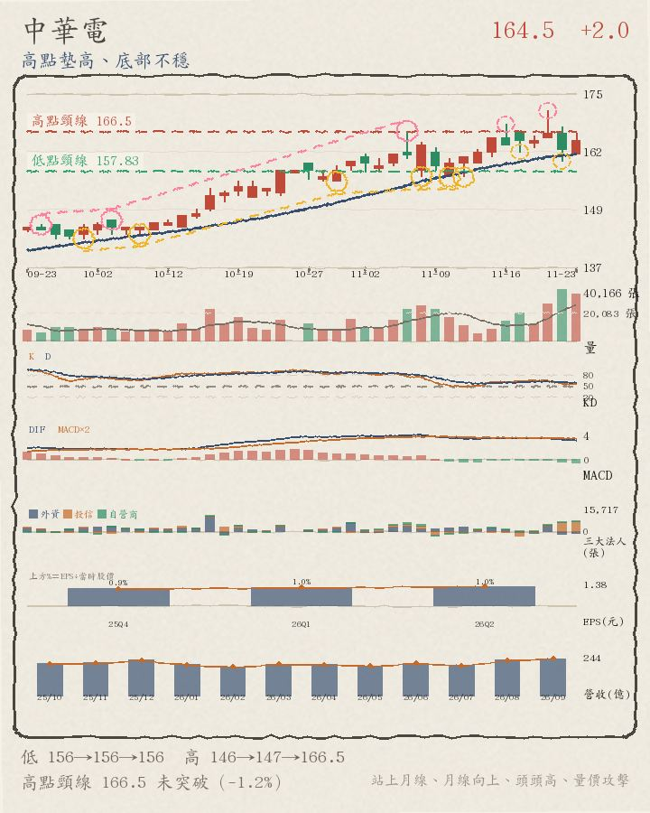
12:31 盤中 167.5（+1.82%），比加權指數弱 7.24 個百分點、站上月線 161.475，離高點頸線 168.5 還差 0.6%，高點還在墊高（但底部沒同步墊高）。
- 月線位置：現價 167.5 在月線 161.475 之上（+3.7%）；5 日線 164.4 也在月線之上（短均在上）；月線向上
- 量能：以已過交易時間推估，今天成交量約是 20 日均量的 3.01 倍（爆量），比 20 日均量大不少；上漲又量增，量價配合
- 關鍵價位：高點頸線 168.5 還沒突破，差 0.6%；前一交易日高點 166（高於 0.9%）；今天盤中高點 170.5（低於 1.8%）；今天盤中低點 160.5（高於 4.4%）
- 轉折結構：高點 146、147、166.5 墊高（頭頭高），但低點 156.5、156.5、156.5 沒有同步墊高；還沒確認的轉折低點 11-17 162、11-20 160；還沒確認的轉折高點 11-16 168、11-19 171（圖上虛線小圈）
廣達 2382 上市
282 +25.0（+9.73%）
區間或轉弱 盤中成交值 59.44 億・全榜第 5 名（上市第 4 名）・相對大盤 +0.67
好條件 3/7：突破頸線、攻擊量（量增＋上漲）、守住今日高檔（距今日高點 1% 內）
不好條件 2/7：在月線之下、月線下彎

12:31 盤中 282（+9.73%），比加權指數強 0.67 個百分點、跌破月線 291.375，已突破高點頸線 263.5，轉折還沒走出明顯方向。
- 月線位置：現價 282 在月線 291.375 之下（-3.2%）；5 日線 259.8 也在月線之下（短均在下）；月線向下
- 量能：以已過交易時間推估，今天成交量約是 20 日均量的 1.63 倍（爆量），比 20 日均量大不少；上漲又量增，量價配合
- 關鍵價位：高點頸線 263.5 已站上；前一交易日高點 260.5（高於 8.3%）；今天盤中高點 282.5（低於 0.2%）；今天盤中低點 276（高於 2.2%）
- 轉折結構：低點 311、311、272 與高點 349、337.5、338 都沒有明顯遞增，屬於區間震盪或轉弱；還沒確認的轉折低點 11-18 253、11-20 247.5；還沒確認的轉折高點 11-19 266.5、11-23 260.5（圖上虛線小圈）
長榮 2603 上市
245.5 +11.0（+4.69%）
區間或轉弱 盤中成交值 54.68 億・全榜第 6 名（上市第 5 名）・相對大盤 -4.37
好條件 1/7：攻擊量（量增＋上漲）
不好條件 3/7：相對大盤弱、在月線之下、月線下彎

12:31 盤中 245.5（+4.69%），比加權指數弱 4.37 個百分點、跌破月線 256.225，離高點頸線 268.38 還差 8.5%，轉折還沒走出明顯方向。
- 月線位置：現價 245.5 在月線 256.225 之下（-4.2%）；5 日線 245.7 也在月線之下（短均在下）；月線向下
- 量能：以已過交易時間推估，今天成交量約是 20 日均量的 2.58 倍（爆量），比 20 日均量大不少；上漲又量增，量價配合
- 關鍵價位：高點頸線 268.38 還沒突破，差 8.5%；前一交易日高點 241.5（高於 1.7%）；今天盤中高點 252（低於 2.6%）；今天盤中低點 240（高於 2.3%）
- 轉折結構：低點 231、254、236.5 與高點 270.5、274.5、264.5 都沒有明顯遞增，屬於區間震盪或轉弱；還沒確認的轉折低點 11-17 253、11-23 230；還沒確認的轉折高點 11-11 264.5、11-16 264（圖上虛線小圈）
台塑化 6505 上市
83.3 +1.6（+1.96%）
區間或轉弱 盤中成交值 48.9 億・全榜第 7 名（上市第 6 名）・相對大盤 -7.10
好條件 1/7：攻擊量（量增＋上漲）
不好條件 3/7：相對大盤弱、在月線之下、月線下彎

12:31 盤中 83.3（+1.96%），比加權指數弱 7.10 個百分點、跌破月線 92.125，離高點頸線 91.68 還差 9.1%，轉折還沒走出明顯方向。
- 月線位置：現價 83.3 在月線 92.125 之下（-9.6%）；5 日線 85.2 也在月線之下（短均在下）；月線向下
- 量能：以已過交易時間推估，今天成交量約是 20 日均量的 3.17 倍（爆量），比 20 日均量大不少；上漲又量增，量價配合
- 關鍵價位：高點頸線 91.68 還沒突破，差 9.1%；前一交易日高點 85.6（低於 2.7%）；今天盤中高點 89.6（低於 7.0%）；今天盤中低點 82.3（高於 1.2%）
- 轉折結構：低點 68.6、80、79.2 與高點 89.8、129、94.3 都沒有明顯遞增，屬於區間震盪或轉弱；還沒確認的轉折低點 11-11 87.6、11-23 79；還沒確認的轉折高點 11-13 94.3、11-23 85.6（圖上虛線小圈）
GIS-KY 6456 上市
68.2 +3.0（+4.60%）
區間或轉弱 盤中成交值 46.06 億・全榜第 8 名（上市第 7 名）・相對大盤 -4.46
好條件 1/7：攻擊量（量增＋上漲）
不好條件 4/7：跌破前低、相對大盤弱、在月線之下、月線下彎

12:31 盤中 68.2（+4.60%），比加權指數弱 4.46 個百分點、跌破月線 88.645，離高點頸線 109 還差 37.4%，轉折還沒走出明顯方向。
- 月線位置：現價 68.2 在月線 88.645 之下（-23.1%）；5 日線 75.22 也在月線之下（短均在下）；月線向下
- 量能：以已過交易時間推估，今天成交量約是 20 日均量的 2.41 倍（爆量），比 20 日均量大不少；上漲又量增，量價配合
- 關鍵價位：已跌破前一個轉折低點；高點頸線 109 還在現價上方 37.4%；前一交易日高點 66.9（高於 1.9%）；今天盤中高點 71.7（低於 4.9%）；今天盤中低點 66.8（高於 2.1%）
- 轉折結構：低點 61.4、83.3、75.4 與高點 108、113.5、111 都沒有明顯遞增，屬於區間震盪或轉弱；還沒確認的轉折低點 11-09 75.4、11-23 61.2；還沒確認的轉折高點 11-13 111（圖上虛線小圈）
元太 8069 上櫃
130 +9.0（+7.44%）
區間或轉弱 盤中成交值 43.6 億・全榜第 9 名（上櫃第 2 名）・相對大盤 -1.62
好條件 1/7：攻擊量（量增＋上漲）
不好條件 3/7：相對大盤弱、在月線之下、月線下彎

12:31 盤中 130（+7.44%），比加權指數弱 1.62 個百分點、跌破月線 142.55，離高點頸線 149.88 還差 13.3%，轉折還沒走出明顯方向。
- 月線位置：現價 130 在月線 142.55 之下（-8.8%）；5 日線 131.5 也在月線之下（短均在下）；月線向下
- 量能：以已過交易時間推估，今天成交量約是 20 日均量的 5.82 倍（爆量），比 20 日均量大不少；上漲又量增，量價配合
- 關鍵價位：高點頸線 149.88 還沒突破，差 13.3%；前一交易日高點 127.5（高於 2.0%）；今天盤中高點 131.5（低於 1.1%）；今天盤中低點 119.5（高於 8.8%）
- 轉折結構：低點 143.5、143.5、129 與高點 158.5、162、150.5 都沒有明顯遞增，屬於區間震盪或轉弱；還沒確認的轉折低點 11-17 132、11-23 120；還沒確認的轉折高點 11-12 150、11-16 147.5（圖上虛線小圈）
藥華藥 6446 上市
1170 +50.0（+4.46%）
區間或轉弱 盤中成交值 43.59 億・全榜第 10 名（上市第 8 名）・相對大盤 -4.60
好條件 2/7：月線向上、攻擊量（量增＋上漲）
不好條件 2/7：相對大盤弱、在月線之下

12:31 盤中 1170（+4.46%），比加權指數弱 4.60 個百分點、跌破月線 1245.75，離高點頸線 1400 還差 16.4%，轉折還沒走出明顯方向。
- 月線位置：現價 1170 在月線 1245.75 之下（-6.1%）；5 日線 1190 也在月線之下（短均在下）；月線向上
- 量能：以已過交易時間推估，今天成交量約是 20 日均量的 1.33 倍（量增），比 20 日均量大不少；上漲又量增，量價配合
- 關鍵價位：高點頸線 1400 還沒突破，差 16.4%；前一交易日高點 1135（高於 3.1%）；今天盤中高點 1215（低於 3.7%）；今天盤中低點 1150（高於 1.7%）
- 轉折結構：低點 1155、1145、1075 與高點 1300、1255、1410 都沒有明顯遞增，屬於區間震盪或轉弱；還沒確認的轉折低點 11-11 1235、11-23 1065；還沒確認的轉折高點 11-09 1390、11-12 1410（圖上虛線小圈）
瑞昱 2379 上市
687 +21.0（+3.15%）
區間或轉弱 盤中成交值 41.19 億・全榜第 11 名（上市第 9 名）・相對大盤 -5.91
好條件 1/7：攻擊量（量增＋上漲）
不好條件 3/7：相對大盤弱、在月線之下、月線下彎

12:31 盤中 687（+3.15%），比加權指數弱 5.91 個百分點、跌破月線 743.65，離高點頸線 789 還差 12.9%，轉折還沒走出明顯方向。
- 月線位置：現價 687 在月線 743.65 之下（-7.6%）；5 日線 702.2 也在月線之下（短均在下）；月線向下
- 量能：以已過交易時間推估，今天成交量約是 20 日均量的 2.33 倍（爆量），比 20 日均量大不少；上漲又量增，量價配合
- 關鍵價位：高點頸線 789 還沒突破，差 12.9%；前一交易日高點 695（低於 1.2%）；今天盤中高點 732（低於 6.1%）；今天盤中低點 670（高於 2.5%）
- 轉折結構：低點 715、728、658 與高點 805、845、782 都沒有明顯遞增，屬於區間震盪或轉弱；還沒確認的轉折低點 11-17 689、11-23 656；還沒確認的轉折高點 11-13 775、11-19 751（圖上虛線小圈）
聯發科 2454 上市
4050 +365.0（+9.91%）
區間或轉弱 盤中成交值 41.03 億・全榜第 12 名（上市第 10 名）・相對大盤 +0.85
好條件 1/7：站上月線
不好條件 1/7：月線下彎

12:31 盤中 4050（+9.91%），比加權指數強 0.85 個百分點、站上月線 3810.5，離高點頸線 4185 還差 3.2%，轉折還沒走出明顯方向。
- 月線位置：現價 4050 在月線 3810.5 之上（+6.3%）；5 日線 3707 也在月線之下（短均在下）；月線向下
- 量能：以已過交易時間推估，今天成交量約是 20 日均量的 0.10 倍（量縮），比 20 日均量少很多；上漲但量縮，量價背離
- 關鍵價位：高點頸線 4185 還沒突破，差 3.2%；前一交易日高點 3685（高於 9.9%）；今天盤中高點 4050（高於 0.0%）；今天盤中低點 4050（高於 0.0%）
- 轉折結構：低點 4430、4875、3115 與高點 5165、4245、4235 都沒有明顯遞增，屬於區間震盪或轉弱；還沒確認的轉折低點 11-20 3350、11-23 3350；還沒確認的轉折高點 11-18 4075、11-23 3685（圖上虛線小圈）
國泰金 2882 上市
104.5 +9.5（+10.00%）
區間或轉弱 盤中成交值 40.97 億・全榜第 13 名（上市第 11 名）・相對大盤 +0.94
好條件 1/7：攻擊量（量增＋上漲）
不好條件 2/7：在月線之下、月線下彎

12:31 盤中 104.5（+10.00%），比加權指數強 0.94 個百分點、跌破月線 110.345，離高點頸線 116.08 還差 10.0%，轉折還沒走出明顯方向。
- 月線位置：現價 104.5 在月線 110.345 之下（-5.3%）；5 日線 103.28 也在月線之下（短均在下）；月線向下
- 量能：以已過交易時間推估，今天成交量約是 20 日均量的 1.67 倍（爆量），比 20 日均量大不少；上漲又量增，量價配合
- 關鍵價位：高點頸線 116.08 還沒突破，差 10.0%；前一交易日高點 97.5（高於 7.2%）；今天盤中高點 104.5（高於 0.0%）；今天盤中低點 102（高於 2.5%）
- 轉折結構：低點 110、110、101 與高點 117.5、117.5、115.5 都沒有明顯遞增，屬於區間震盪或轉弱；還沒確認的轉折低點 11-17 106、11-23 91.5；還沒確認的轉折高點 11-09 113.5、11-16 115.5（圖上虛線小圈）
聯電 2303 上市
97.1 +8.8（+9.97%）
區間或轉弱 盤中成交值 37.63 億・全榜第 14 名（上市第 12 名）・相對大盤 +0.91
好條件 0/7：無
不好條件 2/7：在月線之下、月線下彎

12:31 盤中 97.1（+9.97%），比加權指數強 0.91 個百分點、跌破月線 101.375，離高點頸線 166.75 還差 41.8%，轉折還沒走出明顯方向。
- 月線位置：現價 97.1 在月線 101.375 之下（-4.2%）；5 日線 88.44 也在月線之下（短均在下）；月線向下
- 量能：以已過交易時間推估，今天成交量約是 20 日均量的 0.32 倍（量縮），比 20 日均量少很多；上漲但量縮，量價背離
- 關鍵價位：高點頸線 166.75 還沒突破，差 41.8%；前一交易日高點 88.3（高於 10.0%）；今天盤中高點 97.1（高於 0.0%）；今天盤中低點 97.1（高於 0.0%）
- 轉折結構：低點 135、151.5、88.6 與高點 168.5、165、107.5 都沒有明顯遞增，屬於區間震盪或轉弱；還沒確認的轉折低點 11-06 88.6、11-20 79.4；還沒確認的轉折高點 11-12 107.5、11-23 88.3（圖上虛線小圈）
量縮
↑ 回上方清單
中信金 2891 上市
70 +6.2（+9.72%）
區間或轉弱 盤中成交值 37.58 億・全榜第 15 名（上市第 13 名）・相對大盤 +0.66
好條件 2/7：攻擊量（量增＋上漲）、守住今日高檔（距今日高點 1% 內）
不好條件 2/7：在月線之下、月線下彎

12:31 盤中 70（+9.72%），比加權指數強 0.66 個百分點、跌破月線 74.1，離高點頸線 76.2 還差 8.1%，轉折還沒走出明顯方向。
- 月線位置：現價 70 在月線 74.1 之下（-5.5%）；5 日線 71.16 也在月線之下（短均在下）；月線向下
- 量能：以已過交易時間推估，今天成交量約是 20 日均量的 1.35 倍（量增），比 20 日均量大不少；上漲又量增，量價配合
- 關鍵價位：高點頸線 76.2 還沒突破，差 8.1%；前一交易日高點 66.2（高於 5.7%）；今天盤中高點 70.1（低於 0.1%）；今天盤中低點 67.6（高於 3.6%）
- 轉折結構：低點 67.3、73.8、67.5 與高點 76.4、76.2、80.6 都沒有明顯遞增，屬於區間震盪或轉弱；還沒確認的轉折低點 11-11 72.6、11-23 61.5；還沒確認的轉折高點 11-09 76.2、11-16 80.6（圖上虛線小圈）
量增
↑ 回上方清單
鴻海 2317 上市
226.5 +20.5（+9.95%）
區間或轉弱 盤中成交值 36.36 億・全榜第 16 名（上市第 14 名）・相對大盤 +0.89
好條件 0/7：無
不好條件 2/7：在月線之下、月線下彎

12:31 盤中 226.5（+9.95%），比加權指數強 0.89 個百分點、跌破月線 234.35，離高點頸線 246.25 還差 8.0%，轉折還沒走出明顯方向。
- 月線位置：現價 226.5 在月線 234.35 之下（-3.4%）；5 日線 215.3 也在月線之下（短均在下）；月線向下
- 量能：以已過交易時間推估，今天成交量約是 20 日均量的 0.43 倍（量縮），比 20 日均量少很多；上漲但量縮，量價背離
- 關鍵價位：高點頸線 246.25 還沒突破，差 8.0%；前一交易日高點 214.5（高於 5.6%）；今天盤中高點 226.5（高於 0.0%）；今天盤中低點 226.5（高於 0.0%）
- 轉折結構：低點 247、237、212.5 與高點 266.5、253.5、247.5 都沒有明顯遞增，屬於區間震盪或轉弱；還沒確認的轉折低點 11-18 215、11-23 205；還沒確認的轉折高點 11-12 245、11-19 225.5（圖上虛線小圈）
量縮
↑ 回上方清單
富邦金 2881 上市
143.5 +13.0（+9.96%）
區間或轉弱 盤中成交值 36.31 億・全榜第 17 名（上市第 15 名）・相對大盤 +0.90
好條件 1/7：攻擊量（量增＋上漲）
不好條件 2/7：在月線之下、月線下彎

12:31 盤中 143.5（+9.96%），比加權指數強 0.90 個百分點、跌破月線 153.55，離高點頸線 164 還差 12.5%，轉折還沒走出明顯方向。
- 月線位置：現價 143.5 在月線 153.55 之下（-6.5%）；5 日線 142.9 也在月線之下（短均在下）；月線向下
- 量能：以已過交易時間推估，今天成交量約是 20 日均量的 1.38 倍（量增），比 20 日均量大不少；上漲又量增，量價配合
- 關鍵價位：高點頸線 164 還沒突破，差 12.5%；前一交易日高點 134.5（高於 6.7%）；今天盤中高點 143.5（高於 0.0%）；今天盤中低點 141.5（高於 1.4%）
- 轉折結構：低點 147.5、153.5、140 與高點 164、164、163.5 都沒有明顯遞增，屬於區間震盪或轉弱；還沒確認的轉折低點 11-17 145、11-23 125；還沒確認的轉折高點 11-13 163.5（圖上虛線小圈）
量增
↑ 回上方清單
華碩 2357 上市
810 +52.0（+6.86%）
區間或轉弱 盤中成交值 35.11 億・全榜第 18 名（上市第 16 名）・相對大盤 -2.20
好條件 1/7：攻擊量（量增＋上漲）
不好條件 3/7：相對大盤弱、在月線之下、月線下彎

12:31 盤中 810（+6.86%），比加權指數弱 2.20 個百分點、跌破月線 872.5，離高點頸線 915 還差 11.5%，轉折還沒走出明顯方向。
- 月線位置：現價 810 在月線 872.5 之下（-7.2%）；5 日線 796.2 也在月線之下（短均在下）；月線向下
- 量能：以已過交易時間推估，今天成交量約是 20 日均量的 1.71 倍（爆量），比 20 日均量大不少；上漲又量增，量價配合
- 關鍵價位：高點頸線 915 還沒突破，差 11.5%；前一交易日高點 798（高於 1.5%）；今天盤中高點 833（低於 2.8%）；今天盤中低點 800（高於 1.2%）
- 轉折結構：低點 946、946、790 與高點 1005、915、915 都沒有明顯遞增，屬於區間震盪或轉弱；還沒確認的轉折低點 11-17 810、11-20 746；還沒確認的轉折高點 11-13 915、11-23 798（圖上虛線小圈）
聯詠 3034 上市
432.5 +1.5（+0.35%）
高點墊高、底部不穩 盤中成交值 34.38 億・全榜第 19 名（上市第 17 名）・相對大盤 -8.71
好條件 2/7：頭頭高、攻擊量（量增＋上漲）
不好條件 4/7：跌破前低、相對大盤弱、在月線之下、月線下彎

12:31 盤中 432.5（+0.35%），比加權指數弱 8.71 個百分點、跌破月線 503.125，離高點頸線 492.75 還差 12.2%，高點還在墊高（但底部沒同步墊高）。
- 月線位置：現價 432.5 在月線 503.125 之下（-14.0%）；5 日線 439.6 也在月線之下（短均在下）；月線向下
- 量能：以已過交易時間推估，今天成交量約是 20 日均量的 2.67 倍（爆量），比 20 日均量大不少；上漲又量增，量價配合
- 關鍵價位：已跌破前一個轉折低點；高點頸線 492.75 還在現價上方 12.2%；前一交易日高點 437.5（低於 1.1%）；今天盤中高點 469（低於 7.8%）；今天盤中低點 428（高於 1.1%）
- 轉折結構：高點 561、567、608 墊高（頭頭高），但低點 525、522、460.5 沒有同步墊高；還沒確認的轉折低點 11-17 436.5、11-20 410.5；還沒確認的轉折高點 11-19 467.5、11-23 437.5（圖上虛線小圈）
日月光投控 3711 上市
530 +48.0（+9.96%）
區間或轉弱 盤中成交值 34.22 億・全榜第 20 名（上市第 18 名）・相對大盤 +0.90
好條件 0/7：無
不好條件 2/7：在月線之下、月線下彎

12:31 盤中 530（+9.96%），比加權指數強 0.90 個百分點、跌破月線 587.05，離高點頸線 704 還差 24.7%，轉折還沒走出明顯方向。
- 月線位置：現價 530 在月線 587.05 之下（-9.7%）；5 日線 502.2 也在月線之下（短均在下）；月線向下
- 量能：以已過交易時間推估，今天成交量約是 20 日均量的 0.31 倍（量縮），比 20 日均量少很多；上漲但量縮，量價背離
- 關鍵價位：高點頸線 704 還沒突破，差 24.7%；前一交易日高點 494.5（高於 7.2%）；今天盤中高點 530（高於 0.0%）；今天盤中低點 530（高於 0.0%）
- 轉折結構：低點 715、639、515 與高點 699、709、630 都沒有明顯遞增，屬於區間震盪或轉弱；還沒確認的轉折低點 11-17 506、11-23 451；還沒確認的轉折高點 11-18 565、11-23 494.5（圖上虛線小圈）
量縮
↑ 回上方清單
長榮航 2618 上市
47.8 +3.6（+8.14%）
高點墊高、底部不穩 盤中成交值 31.09 億・全榜第 21 名（上市第 19 名）・相對大盤 -0.92
好條件 4/7：站上月線、月線向上、頭頭高、攻擊量（量增＋上漲）
不好條件 1/7：相對大盤弱
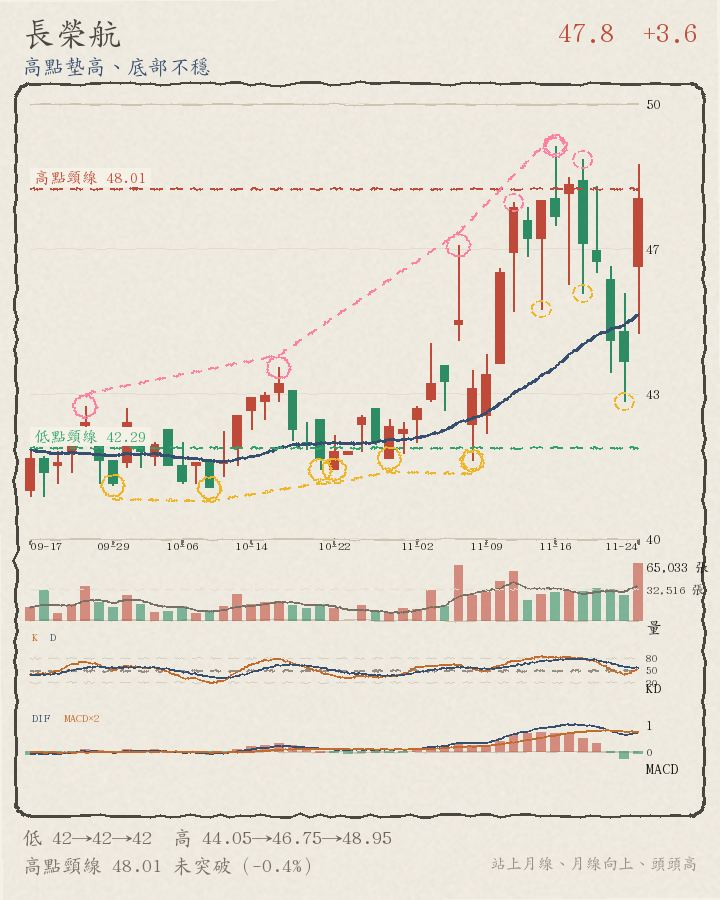
12:31 盤中 47.8（+8.14%），比加權指數弱 0.92 個百分點、站上月線 44.998，離高點頸線 48.01 還差 0.4%，高點還在墊高（但底部沒同步墊高）。
- 月線位置：現價 47.8 在月線 44.998 之上（+6.2%）；5 日線 46.03 也在月線之上（短均在上）；月線向上
- 量能：以已過交易時間推估，今天成交量約是 20 日均量的 2.89 倍（爆量），比 20 日均量大不少；上漲又量增，量價配合
- 關鍵價位：高點頸線 48.01 還沒突破，差 0.4%；前一交易日高點 45.7（高於 4.6%）；今天盤中高點 48.55（低於 1.5%）；今天盤中低點 44.8（高於 6.7%）
- 轉折結構：高點 44.05、46.75、48.95 墊高（頭頭高），但低點 41.8、42.05、42 沒有同步墊高；還沒確認的轉折低點 11-18 45.7、11-23 43.3；還沒確認的轉折高點 11-16 48.95、11-18 48.65（圖上虛線小圈）
京元電子 2449 上市
172.5 +15.5（+9.87%）
區間或轉弱 盤中成交值 27.15 億・全榜第 22 名（上市第 20 名）・相對大盤 +0.81
好條件 0/7：無
不好條件 3/7：跌破前低、在月線之下、月線下彎
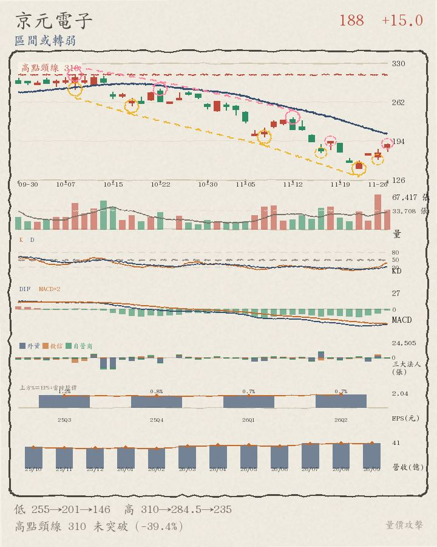
12:31 盤中 172.5（+9.87%），比加權指數強 0.81 個百分點、跌破月線 220.85，離高點頸線 284 還差 39.3%，轉折還沒走出明顯方向。
- 月線位置：現價 172.5 在月線 220.85 之下（-21.9%）；5 日線 172 也在月線之下（短均在下）；月線向下
- 量能：以已過交易時間推估，今天成交量約是 20 日均量的 0.88 倍（量平），比 20 日均量少一些
- 關鍵價位：已跌破前一個轉折低點；高點頸線 284 還在現價上方 39.3%；前一交易日高點 160（高於 7.8%）；今天盤中高點 172.5（高於 0.0%）；今天盤中低點 172.5（高於 0.0%）
- 轉折結構：低點 284、255、201 與高點 310、284.5、235 都沒有明顯遞增，屬於區間震盪或轉弱；還沒確認的轉折低點 11-17 173.5、11-23 146；還沒確認的轉折高點 11-12 235、11-18 194（圖上虛線小圈）
華經 2468 上市
69.3 +4.4（+6.78%）
上升趨勢（底底高＋頭頭高） 盤中成交值 24.31 億・全榜第 23 名（上市第 21 名）・相對大盤 -2.28
好條件 6/7：站上月線、月線向上、底底高、頭頭高、突破頸線、攻擊量（量增＋上漲）
不好條件 1/7：相對大盤弱

12:31 盤中 69.3（+6.78%），比加權指數弱 2.28 個百分點、站上月線 63.285，已突破高點頸線 34.6，轉折結構仍是底底高＋頭頭高。
- 月線位置：現價 69.3 在月線 63.285 之上（+9.5%）；5 日線 67.32 也在月線之上（短均在上）；月線向上
- 量能：以已過交易時間推估，今天成交量約是 20 日均量的 1.19 倍（量增），比 20 日均量大不少；上漲又量增，量價配合
- 關鍵價位：高點頸線 34.6 已站上；前一交易日高點 74.6（低於 7.1%）；今天盤中高點 71.3（低於 2.8%）；今天盤中低點 68.3（高於 1.5%）
- 轉折結構：低點 40.5、49.6、53.1 一路墊高、高點 34.2、49.45、82.1 也一路墊高，是底底高＋頭頭高；還沒確認的轉折低點 11-06 53.1、11-20 59.5；還沒確認的轉折高點 11-17 82.1、11-23 74.6（圖上虛線小圈）
台塑 1301 上市
61 +4.2（+7.39%）
區間或轉弱 盤中成交值 23.93 億・全榜第 24 名（上市第 22 名）・相對大盤 -1.67
好條件 1/7：攻擊量（量增＋上漲）
不好條件 4/7：相對大盤弱、在月線之下、貼近今日低點（1% 內）、月線下彎
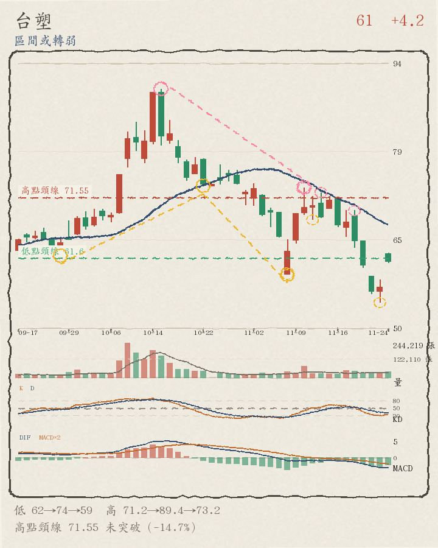
12:31 盤中 61（+7.39%），比加權指數弱 1.67 個百分點、跌破月線 67.775，離高點頸線 71.55 還差 14.7%，轉折還沒走出明顯方向。
- 月線位置：現價 61 在月線 67.775 之下（-10.0%）；5 日線 61.04 也在月線之下（短均在下）；月線向下
- 量能：以已過交易時間推估，今天成交量約是 20 日均量的 1.55 倍（爆量），比 20 日均量大不少；上漲又量增，量價配合
- 關鍵價位：高點頸線 71.55 還沒突破，差 14.7%；前一交易日高點 58（高於 5.2%）；今天盤中高點 62.4（低於 2.2%）；今天盤中低點 60.8（高於 0.3%）
- 轉折結構：低點 62、73.5、58.9 與高點 71.2、89.4、73.2 都沒有明顯遞增，屬於區間震盪或轉弱；還沒確認的轉折低點 11-11 67.9、11-23 54.3；還沒確認的轉折高點 11-12 72.4、11-18 69.4（圖上虛線小圈）
威剛 3260 上櫃
273 +23.5（+9.42%）
區間或轉弱 盤中成交值 23.78 億・全榜第 25 名（上櫃第 3 名）・相對大盤 +0.36
好條件 2/7：攻擊量（量增＋上漲）、守住今日高檔（距今日高點 1% 內）
不好條件 2/7：在月線之下、月線下彎

12:31 盤中 273（+9.42%），比加權指數強 0.36 個百分點、跌破月線 302.7，離高點頸線 319.75 還差 14.6%，轉折還沒走出明顯方向。
- 月線位置：現價 273 在月線 302.7 之下（-9.8%）；5 日線 257.8 也在月線之下（短均在下）；月線向下
- 量能：以已過交易時間推估，今天成交量約是 20 日均量的 1.45 倍（量增），比 20 日均量大不少；上漲又量增，量價配合
- 關鍵價位：高點頸線 319.75 還沒突破，差 14.6%；前一交易日高點 254（高於 7.5%）；今天盤中高點 274（低於 0.4%）；今天盤中低點 270（高於 1.1%）
- 轉折結構：低點 328、328、270 與高點 385.5、378.5、323 都沒有明顯遞增，屬於區間震盪或轉弱；還沒確認的轉折低點 11-17 263、11-23 230.5；還沒確認的轉折高點 11-18 288、11-23 254（圖上虛線小圈）
量增
↑ 回上方清單
中鼎 9933 上市
54.7 +2.8（+5.39%）
高點墊高、底部不穩 盤中成交值 20.96 億・全榜第 26 名（上市第 23 名）・相對大盤 -3.67
好條件 5/7：站上月線、月線向上、頭頭高、突破頸線、攻擊量（量增＋上漲）
不好條件 1/7：相對大盤弱
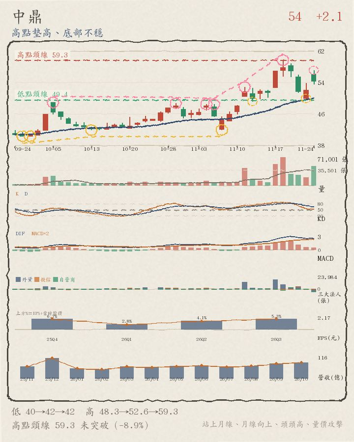
12:31 盤中 54.7（+5.39%），比加權指數弱 3.67 個百分點、站上月線 49.468，已突破高點頸線 48.46，高點還在墊高（但底部沒同步墊高）。
- 月線位置：現價 54.7 在月線 49.468 之上（+10.6%）；5 日線 54.82 也在月線之上（短均在上）；月線向上
- 量能：以已過交易時間推估，今天成交量約是 20 日均量的 2.83 倍（爆量），比 20 日均量大不少；上漲又量增，量價配合
- 關鍵價位：高點頸線 48.46 已站上；前一交易日高點 53.5（高於 2.2%）；今天盤中高點 56.8（低於 3.7%）；今天盤中低點 53.9（高於 1.5%）
- 轉折結構：高點 48.3、52.6、59.3 墊高（頭頭高），但低點 40.35、41.9、41.9 沒有同步墊高；還沒確認的轉折低點 11-12 49.05、11-23 49.75；還沒確認的轉折高點 11-11 52.6、11-18 59.3（圖上虛線小圈）
兆豐金 2886 上市
55 +5.0（+10.00%）
上升趨勢（底底高＋頭頭高） 盤中成交值 20.67 億・全榜第 27 名（上市第 24 名）・相對大盤 +0.94
好條件 4/7：站上月線、底底高、頭頭高、攻擊量（量增＋上漲）
不好條件 1/7：月線下彎

12:31 盤中 55（+10.00%），比加權指數強 0.94 個百分點、站上月線 53.68，離高點頸線 55.57 還差 1.0%，轉折結構仍是底底高＋頭頭高。
- 月線位置：現價 55 在月線 53.68 之上（+2.5%）；5 日線 52.5 也在月線之下（短均在下）；月線向下
- 量能：以已過交易時間推估，今天成交量約是 20 日均量的 1.58 倍（爆量），比 20 日均量大不少；上漲又量增，量價配合
- 關鍵價位：高點頸線 55.57 還沒突破，差 1.0%；前一交易日高點 53.4（高於 3.0%）；今天盤中高點 55（高於 0.0%）；今天盤中低點 52（高於 5.8%）
- 轉折結構：低點 48.35、49、50.4 一路墊高、高點 54.4、56、56 也一路墊高，是底底高＋頭頭高；還沒確認的轉折低點 11-18 52、11-23 49.65；還沒確認的轉折高點 11-16 56.3、11-19 56.5（圖上虛線小圈）
萬海 2615 上市
97.7 +1.6（+1.66%）
區間或轉弱 盤中成交值 19.58 億・全榜第 28 名（上市第 25 名）・相對大盤 -7.40
好條件 1/7：攻擊量（量增＋上漲）
不好條件 5/7：跌破前低、相對大盤弱、在月線之下、貼近今日低點（1% 內）、月線下彎
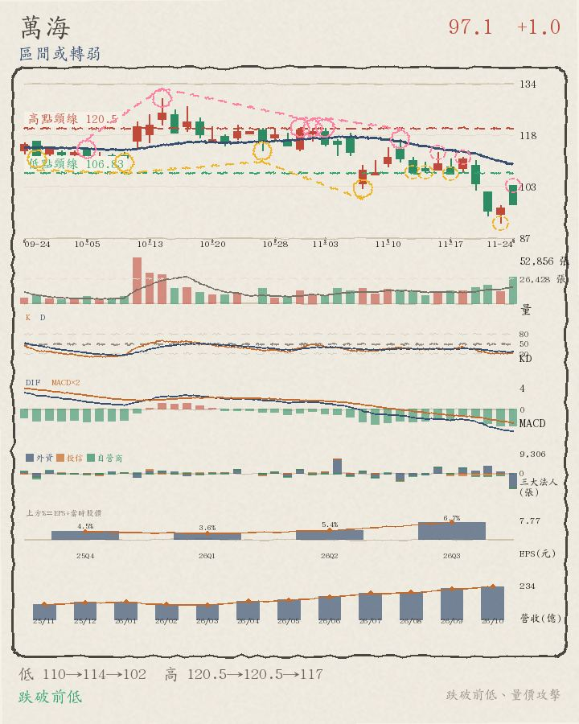
12:31 盤中 97.7（+1.66%），比加權指數弱 7.40 個百分點、跌破月線 110.33，離高點頸線 112.25 還差 13.0%，轉折還沒走出明顯方向。
- 月線位置：現價 97.7 在月線 110.33 之下（-11.4%）；5 日線 102.42 也在月線之下（短均在下）；月線向下
- 量能：以已過交易時間推估，今天成交量約是 20 日均量的 1.88 倍（爆量），比 20 日均量大不少；上漲又量增，量價配合
- 關鍵價位：已跌破前一個轉折低點；高點頸線 112.25 還在現價上方 13.0%；前一交易日高點 96.7（高於 1.0%）；今天盤中高點 103（低於 5.1%）；今天盤中低點 97.2（高於 0.5%）
- 轉折結構：低點 110、113.5、102 與高點 120.5、120.5、117 都沒有明顯遞增，屬於區間震盪或轉弱；還沒確認的轉折低點 11-17 106.5、11-23 91.4；還沒確認的轉折高點 11-16 113、11-18 111.5（圖上虛線小圈）
台新新光金 2887 上市
36.15 +3.1（+9.55%）
區間或轉弱 盤中成交值 19.18 億・全榜第 29 名（上市第 26 名）・相對大盤 +0.49
好條件 1/7：守住今日高檔（距今日高點 1% 內）
不好條件 3/7：跌破前低、在月線之下、月線下彎

12:31 盤中 36.15（+9.55%），比加權指數強 0.49 個百分點、跌破月線 39.428，離高點頸線 40.55 還差 10.9%，轉折還沒走出明顯方向。
- 月線位置：現價 36.15 在月線 39.428 之下（-8.3%）；5 日線 35.81 也在月線之下（短均在下）；月線向下
- 量能：以已過交易時間推估，今天成交量約是 20 日均量的 0.98 倍（量平），跟 20 日均量差不多
- 關鍵價位：已跌破前一個轉折低點；高點頸線 40.55 還在現價上方 10.9%；前一交易日高點 33.95（高於 6.5%）；今天盤中高點 36.3（低於 0.4%）；今天盤中低點 35.15（高於 2.8%）
- 轉折結構：低點 40.1、40.9、36.3 與高點 43.5、42.9、41.35 都沒有明顯遞增，屬於區間震盪或轉弱；還沒確認的轉折低點 11-06 36.3、11-23 31.15；還沒確認的轉折高點 11-16 41.35、11-18 39.55（圖上虛線小圈）
上銀 2049 上市
278.5 +12.0（+4.50%）
區間或轉弱 盤中成交值 18.59 億・全榜第 30 名（上市第 27 名）・相對大盤 -4.56
好條件 1/7：攻擊量（量增＋上漲）
不好條件 4/7：相對大盤弱、在月線之下、貼近今日低點（1% 內）、月線下彎

12:31 盤中 278.5（+4.50%），比加權指數弱 4.56 個百分點、跌破月線 298.175，離高點頸線 344.5 還差 19.2%，轉折還沒走出明顯方向。
- 月線位置：現價 278.5 在月線 298.175 之下（-6.6%）；5 日線 267.4 也在月線之下（短均在下）；月線向下
- 量能：以已過交易時間推估，今天成交量約是 20 日均量的 2.24 倍（爆量），比 20 日均量大不少；上漲又量增，量價配合
- 關鍵價位：高點頸線 344.5 還沒突破，差 19.2%；前一交易日高點 266.5（高於 4.5%）；今天盤中高點 292（低於 4.6%）；今天盤中低點 277.5（高於 0.4%）
- 轉折結構：低點 298、299、256.5 與高點 357、347.5、328 都沒有明顯遞增，屬於區間震盪或轉弱；還沒確認的轉折低點 11-06 256.5、11-20 237.5；還沒確認的轉折高點 11-12 328、11-23 266.5（圖上虛線小圈）
玉山金 2884 上市
41.3 +2.6（+6.72%）
區間或轉弱 盤中成交值 18.5 億・全榜第 31 名（上市第 28 名）・相對大盤 -2.34
好條件 2/7：攻擊量（量增＋上漲）、守住今日高檔（距今日高點 1% 內）
不好條件 4/7：跌破前低、相對大盤弱、在月線之下、月線下彎

12:31 盤中 41.3（+6.72%），比加權指數弱 2.34 個百分點、跌破月線 46.38，離高點頸線 48.25 還差 14.4%，轉折還沒走出明顯方向。
- 月線位置：現價 41.3 在月線 46.38 之下（-10.9%）；5 日線 41.49 也在月線之下（短均在下）；月線向下
- 量能：以已過交易時間推估，今天成交量約是 20 日均量的 1.40 倍（量增），比 20 日均量大不少；上漲又量增，量價配合
- 關鍵價位：已跌破前一個轉折低點；高點頸線 48.25 還在現價上方 14.4%；前一交易日高點 39.85（高於 3.6%）；今天盤中高點 41.5（低於 0.5%）；今天盤中低點 40.1（高於 3.0%）
- 轉折結構：低點 44.2、48、44.35 與高點 50.1、49.6、49.3 都沒有明顯遞增，屬於區間震盪或轉弱；還沒確認的轉折低點 11-11 46.1、11-23 37.5；還沒確認的轉折高點 11-09 48.1、11-16 49.3（圖上虛線小圈）
華航 2610 上市
22.25 +1.1（+5.45%）
區間或轉弱 盤中成交值 17.78 億・全榜第 32 名（上市第 29 名）・相對大盤 -3.61
好條件 4/7：站上月線、月線向上、攻擊量（量增＋上漲）、守住今日高檔（距今日高點 1% 內）
不好條件 1/7：相對大盤弱

12:31 盤中 22.25（+5.45%），比加權指數弱 3.61 個百分點、站上月線 21.673，離高點頸線 23.62 還差 5.8%，轉折還沒走出明顯方向。
- 月線位置：現價 22.25 在月線 21.673 之上（+2.7%）；5 日線 22.18 也在月線之上（短均在上）；月線向上
- 量能：以已過交易時間推估，今天成交量約是 20 日均量的 2.32 倍（爆量），比 20 日均量大不少；上漲又量增，量價配合
- 關鍵價位：高點頸線 23.62 還沒突破，差 5.8%；前一交易日高點 21.95（高於 1.4%）；今天盤中高點 22.45（低於 0.9%）；今天盤中低點 21.65（高於 2.8%）
- 轉折結構：低點 20.25、20.05、20.3 與高點 21.2、20.6、23.7 都沒有明顯遞增，屬於區間震盪或轉弱；還沒確認的轉折低點 11-17 22.15、11-23 20.95；還沒確認的轉折高點 11-16 23.7、11-18 23.55（圖上虛線小圈）
可成 2474 上市
203 +10.0（+5.18%）
高點墊高、底部不穩 盤中成交值 16.26 億・全榜第 33 名（上市第 30 名）・相對大盤 -3.88
好條件 4/7：站上月線、月線向上、頭頭高、攻擊量（量增＋上漲）
不好條件 1/7：相對大盤弱

12:31 盤中 203（+5.18%），比加權指數弱 3.88 個百分點、站上月線 192.4，離高點頸線 205.25 還差 1.1%，高點還在墊高（但底部沒同步墊高）。
- 月線位置：現價 203 在月線 192.4 之上（+5.5%）；5 日線 196.1 也在月線之上（短均在上）；月線向上
- 量能：以已過交易時間推估，今天成交量約是 20 日均量的 4.51 倍（爆量），比 20 日均量大不少；上漲又量增，量價配合
- 關鍵價位：高點頸線 205.25 還沒突破，差 1.1%；前一交易日高點 195（高於 4.1%）；今天盤中高點 208.5（低於 2.6%）；今天盤中低點 199.5（高於 1.8%）
- 轉折結構：高點 197、199、203 墊高（頭頭高），但低點 193、193、171 沒有同步墊高；還沒確認的轉折低點 11-17 196、11-23 189.5；還沒確認的轉折高點 11-16 203、11-18 202（圖上虛線小圈）
陽明 2609 上市
55.9 +1.4（+2.57%）
區間或轉弱 盤中成交值 16.23 億・全榜第 34 名（上市第 31 名）・相對大盤 -6.49
好條件 1/7：攻擊量（量增＋上漲）
不好條件 4/7：相對大盤弱、在月線之下、貼近今日低點（1% 內）、月線下彎
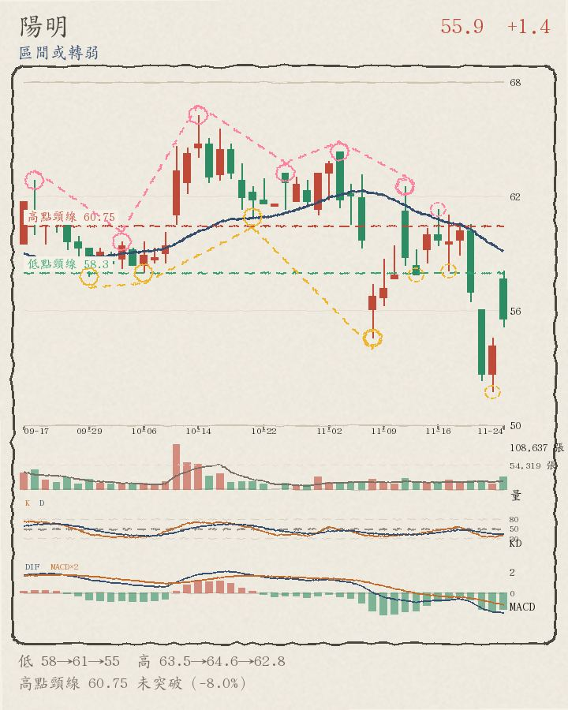
12:31 盤中 55.9（+2.57%），比加權指數弱 6.49 個百分點、跌破月線 59.77，離高點頸線 60.75 還差 8.0%，轉折還沒走出明顯方向。
- 月線位置：現價 55.9 在月線 59.77 之下（-6.5%）；5 日線 57.04 也在月線之下（短均在下）；月線向下
- 量能：以已過交易時間推估，今天成交量約是 20 日均量的 2.12 倍（爆量），比 20 日均量大不少；上漲又量增，量價配合
- 關鍵價位：高點頸線 60.75 還沒突破，差 8.0%；前一交易日高點 54.9（高於 1.8%）；今天盤中高點 58.4（低於 4.3%）；今天盤中低點 55.5（高於 0.7%）
- 轉折結構：低點 58.3、61.2、54.9 與高點 63.5、64.6、62.8 都沒有明顯遞增，屬於區間震盪或轉弱；還沒確認的轉折低點 11-17 58.4、11-23 52.1；還沒確認的轉折高點 11-11 62.8、11-16 61.6（圖上虛線小圈）
南亞 1303 上市
249 +22.5（+9.93%）
區間或轉弱 盤中成交值 15.92 億・全榜第 35 名（上市第 32 名）・相對大盤 +0.87
好條件 0/7：無
不好條件 2/7：在月線之下、月線下彎
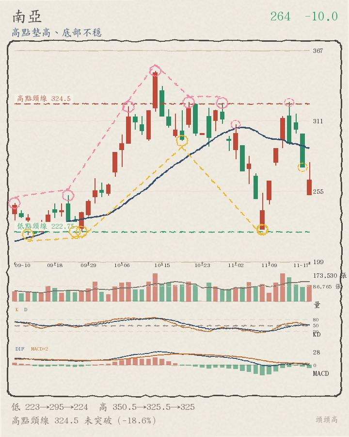
12:31 盤中 249（+9.93%），比加權指數強 0.87 個百分點、跌破月線 273.675，離高點頸線 325.33 還差 23.5%，轉折還沒走出明顯方向。
- 月線位置：現價 249 在月線 273.675 之下（-9.0%）；5 日線 235.2 也在月線之下（短均在下）；月線向下
- 量能：以已過交易時間推估，今天成交量約是 20 日均量的 0.08 倍（量縮），比 20 日均量少很多；上漲但量縮，量價背離
- 關鍵價位：高點頸線 325.33 還沒突破，差 23.5%；前一交易日高點 226.5（高於 9.9%）；今天盤中高點 249（高於 0.0%）；今天盤中低點 249（高於 0.0%）
- 轉折結構：低點 223、295、224.5 與高點 325.5、325、325.5 都沒有明顯遞增，屬於區間震盪或轉弱；還沒確認的轉折低點 11-06 224.5、11-23 196；還沒確認的轉折高點 11-18 280、11-23 226.5（圖上虛線小圈）
量縮
↑ 回上方清單
第一金 2892 上市
40.85 +3.2（+8.50%）
區間或轉弱 盤中成交值 15.83 億・全榜第 36 名（上市第 33 名）・相對大盤 -0.56
好條件 1/7：攻擊量（量增＋上漲）
不好條件 3/7：相對大盤弱、在月線之下、月線下彎

12:31 盤中 40.85（+8.50%），比加權指數弱 0.56 個百分點、跌破月線 41.903，離高點頸線 44.38 還差 8.0%，轉折還沒走出明顯方向。
- 月線位置：現價 40.85 在月線 41.903 之下（-2.5%）；5 日線 39.7 也在月線之下（短均在下）；月線向下
- 量能：以已過交易時間推估，今天成交量約是 20 日均量的 1.65 倍（爆量），比 20 日均量大不少；上漲又量增，量價配合
- 關鍵價位：高點頸線 44.38 還沒突破，差 8.0%；前一交易日高點 38.5（高於 6.1%）；今天盤中高點 41.4（低於 1.3%）；今天盤中低點 40.15（高於 1.7%）
- 轉折結構：低點 37.95、40.45、38.8 與高點 42.1、44.8、43.95 都沒有明顯遞增，屬於區間震盪或轉弱；還沒確認的轉折低點 11-06 38.8、11-23 36.2；還沒確認的轉折高點 11-09 41.7、11-16 43.95（圖上虛線小圈）
鈊象 3293 上櫃
787 +32.0（+4.24%）
高點墊高、底部不穩 盤中成交值 15.34 億・全榜第 37 名（上櫃第 4 名）・相對大盤 -4.82
好條件 3/7：站上月線、頭頭高、攻擊量（量增＋上漲）
不好條件 2/7：相對大盤弱、月線下彎
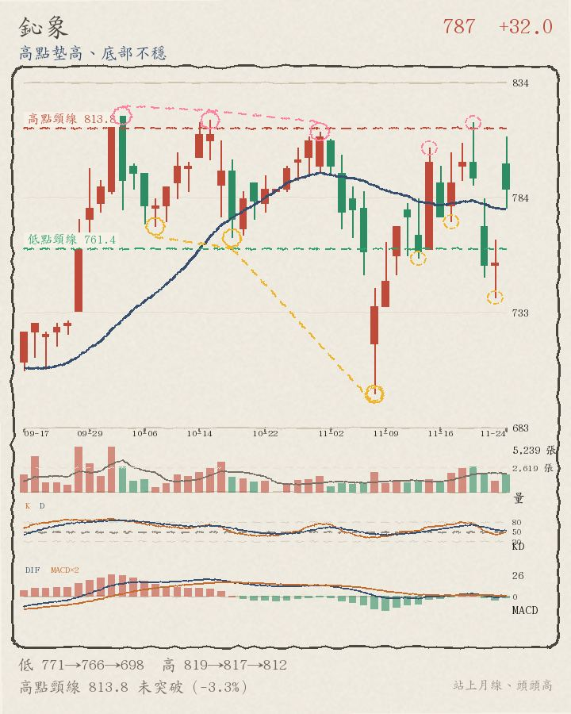
12:31 盤中 787（+4.24%），比加權指數弱 4.82 個百分點、站上月線 778.95，離高點頸線 813.8 還差 3.3%，高點還在墊高（但底部沒同步墊高）。
- 月線位置：現價 787 在月線 778.95 之上（+1.0%）；5 日線 778 也在月線之下（短均在下）；月線向下
- 量能：以已過交易時間推估，今天成交量約是 20 日均量的 1.67 倍（爆量），比 20 日均量大不少；上漲又量增，量價配合
- 關鍵價位：高點頸線 813.8 還沒突破，差 3.3%；前一交易日高點 765（高於 2.9%）；今天盤中高點 810（低於 2.8%）；今天盤中低點 779（高於 1.0%）
- 轉折結構：高點 819、817、812 墊高（頭頭高），但低點 771、766、698 沒有同步墊高；還沒確認的轉折低點 11-17 773、11-23 740；還沒確認的轉折高點 11-13 805、11-19 816（圖上虛線小圈）
大成鋼 2027 上市
48.45 +3.7（+8.27%）
區間或轉弱 盤中成交值 14.81 億・全榜第 38 名（上市第 34 名）・相對大盤 -0.79
好條件 4/7：站上月線、突破頸線、攻擊量（量增＋上漲）、守住今日高檔（距今日高點 1% 內）
不好條件 2/7：相對大盤弱、月線下彎

12:31 盤中 48.45（+8.27%），比加權指數弱 0.79 個百分點、站上月線 47.718，已突破高點頸線 46.38，轉折還沒走出明顯方向。
- 月線位置：現價 48.45 在月線 47.718 之上（+1.5%）；5 日線 44.97 也在月線之下（短均在下）；月線向下
- 量能：以已過交易時間推估，今天成交量約是 20 日均量的 2.12 倍（爆量），比 20 日均量大不少；上漲又量增，量價配合
- 關鍵價位：高點頸線 46.38 已站上；前一交易日高點 45.8（高於 5.8%）；今天盤中高點 48.85（低於 0.8%）；今天盤中低點 46.65（高於 3.9%）
- 轉折結構：低點 47.15、49.55、44.1 與高點 51.3、50.9、51.7 都沒有明顯遞增，屬於區間震盪或轉弱；還沒確認的轉折低點 11-17 43.6、11-23 41.45；還沒確認的轉折高點 11-18 46.95、11-23 45.8（圖上虛線小圈）
永豐金 2890 上市
40.35 +3.6（+9.95%）
區間或轉弱 盤中成交值 14.61 億・全榜第 39 名（上市第 35 名）・相對大盤 +0.89
好條件 1/7：攻擊量（量增＋上漲）
不好條件 2/7：在月線之下、月線下彎

12:31 盤中 40.35（+9.95%），比加權指數強 0.89 個百分點、跌破月線 42.705，離高點頸線 43.77 還差 7.8%，轉折還沒走出明顯方向。
- 月線位置：現價 40.35 在月線 42.705 之下（-5.5%）；5 日線 38.79 也在月線之下（短均在下）；月線向下
- 量能：以已過交易時間推估，今天成交量約是 20 日均量的 1.37 倍（量增），比 20 日均量大不少；上漲又量增，量價配合
- 關鍵價位：高點頸線 43.77 還沒突破，差 7.8%；前一交易日高點 37.2（高於 8.5%）；今天盤中高點 40.35（高於 0.0%）；今天盤中低點 38.2（高於 5.6%）
- 轉折結構：低點 42.7248、43.8、38.9 與高點 46.15、47.5、44.45 都沒有明顯遞增，屬於區間震盪或轉弱；還沒確認的轉折低點 11-11 41.1、11-23 34.5；還沒確認的轉折高點 11-09 43.1、11-16 44.45（圖上虛線小圈）
量增
↑ 回上方清單
技嘉 2376 上市
278 +25.0（+9.88%）
區間或轉弱 盤中成交值 13.74 億・全榜第 40 名（上市第 36 名）・相對大盤 +0.82
好條件 0/7：無
不好條件 3/7：跌破前低、在月線之下、月線下彎

12:31 盤中 278（+9.88%），比加權指數強 0.82 個百分點、跌破月線 304.15，離高點頸線 365 還差 23.8%，轉折還沒走出明顯方向。
- 月線位置：現價 278 在月線 304.15 之下（-8.6%）；5 日線 262.4 也在月線之下（短均在下）；月線向下
- 量能：以已過交易時間推估，今天成交量約是 20 日均量的 0.81 倍（量平），比 20 日均量少很多；上漲但量縮，量價背離
- 關鍵價位：已跌破前一個轉折低點；高點頸線 365 還在現價上方 23.8%；前一交易日高點 257（高於 8.2%）；今天盤中高點 278（高於 0.0%）；今天盤中低點 278（高於 0.0%）
- 轉折結構：低點 358.5、344.5、282 與高點 396.5、363、367 都沒有明顯遞增，屬於區間震盪或轉弱；還沒確認的轉折低點 11-20 242.5、11-23 242.5；還沒確認的轉折高點 11-18 284.5、11-23 257（圖上虛線小圈）
中租-KY 5871 上市
102 +5.4（+5.59%）
區間或轉弱 盤中成交值 13.13 億・全榜第 41 名（上市第 37 名）・相對大盤 -3.47
好條件 3/7：突破頸線、攻擊量（量增＋上漲）、守住今日高檔（距今日高點 1% 內）
不好條件 3/7：相對大盤弱、在月線之下、月線下彎

12:31 盤中 102（+5.59%），比加權指數弱 3.47 個百分點、跌破月線 102.69，已突破高點頸線 99.7，轉折還沒走出明顯方向。
- 月線位置：現價 102 在月線 102.69 之下（-0.7%）；5 日線 97.46 也在月線之下（短均在下）；月線向下
- 量能：以已過交易時間推估，今天成交量約是 20 日均量的 1.90 倍（爆量），比 20 日均量大不少；上漲又量增，量價配合
- 關鍵價位：高點頸線 99.7 已站上；前一交易日高點 98.9（高於 3.1%）；今天盤中高點 103（低於 1.0%）；今天盤中低點 99.6（高於 2.4%）
- 轉折結構：低點 105.5、105.5、98.1 與高點 108、106、106 都沒有明顯遞增，屬於區間震盪或轉弱；還沒確認的轉折低點 11-17 97.9、11-20 93.8；還沒確認的轉折高點 11-19 100.5、11-23 98.9（圖上虛線小圈）
文曄 3036 上市
170 +8.5（+5.26%）
區間或轉弱 盤中成交值 12.78 億・全榜第 42 名（上市第 38 名）・相對大盤 -3.80
好條件 1/7：攻擊量（量增＋上漲）
不好條件 5/7：跌破前低、相對大盤弱、在月線之下、貼近今日低點（1% 內）、月線下彎
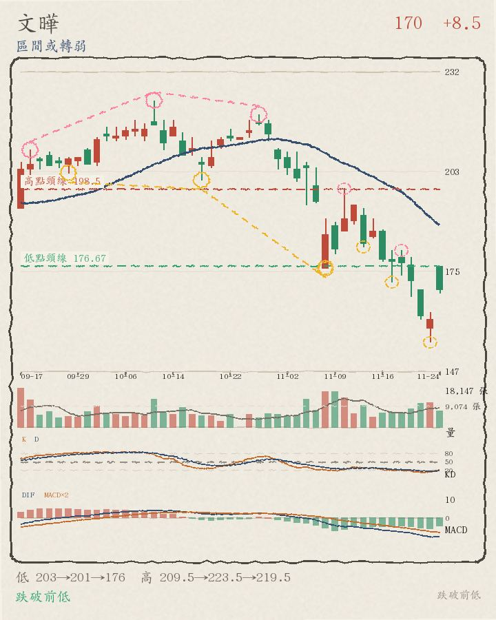
12:31 盤中 170（+5.26%），比加權指數弱 3.80 個百分點、跌破月線 190.475，離高點頸線 198.5 還差 14.4%，轉折還沒走出明顯方向。
- 月線位置：現價 170 在月線 190.475 之下（-10.8%）；5 日線 170.4 也在月線之下（短均在下）；月線向下
- 量能：以已過交易時間推估，今天成交量約是 20 日均量的 1.14 倍（量增），比 20 日均量大一些；上漲又量增，量價配合
- 關鍵價位：已跌破前一個轉折低點；高點頸線 198.5 還在現價上方 14.4%；前一交易日高點 163.5（高於 4.0%）；今天盤中高點 176.5（低於 3.7%）；今天盤中低點 169（高於 0.6%）
- 轉折結構：低點 203、201、176 與高點 209.5、223.5、219.5 都沒有明顯遞增，屬於區間震盪或轉弱；還沒確認的轉折低點 11-17 172、11-23 155；還沒確認的轉折高點 11-10 198.5、11-18 181（圖上虛線小圈）
緯創 3231 上市
163 +14.5（+9.76%）
區間或轉弱 盤中成交值 12.75 億・全榜第 43 名（上市第 39 名）・相對大盤 +0.70
好條件 0/7：無
不好條件 2/7：在月線之下、月線下彎

12:31 盤中 163（+9.76%），比加權指數強 0.70 個百分點、跌破月線 170.2，離高點頸線 177.75 還差 8.3%，轉折還沒走出明顯方向。
- 月線位置：現價 163 在月線 170.2 之下（-4.2%）；5 日線 154.1 也在月線之下（短均在下）；月線向下
- 量能：以已過交易時間推估，今天成交量約是 20 日均量的 0.32 倍（量縮），比 20 日均量少很多；上漲但量縮，量價背離
- 關鍵價位：高點頸線 177.75 還沒突破，差 8.3%；前一交易日高點 154（高於 5.8%）；今天盤中高點 163（高於 0.0%）；今天盤中低點 163（高於 0.0%）
- 轉折結構：低點 182.5、173.5、152 與高點 194.5、199.5、181 都沒有明顯遞增，屬於區間震盪或轉弱；還沒確認的轉折低點 11-17 153、11-23 143；還沒確認的轉折高點 11-19 164、11-23 154（圖上虛線小圈）
量縮
↑ 回上方清單
中華資安 7765 上市
293.5 +23.5（+8.70%）
高點墊高、底部不穩 盤中成交值 12.49 億・全榜第 44 名（上市第 40 名）・相對大盤 -0.36
好條件 4/7：站上月線、月線向上、頭頭高、攻擊量（量增＋上漲）
不好條件 1/7：相對大盤弱
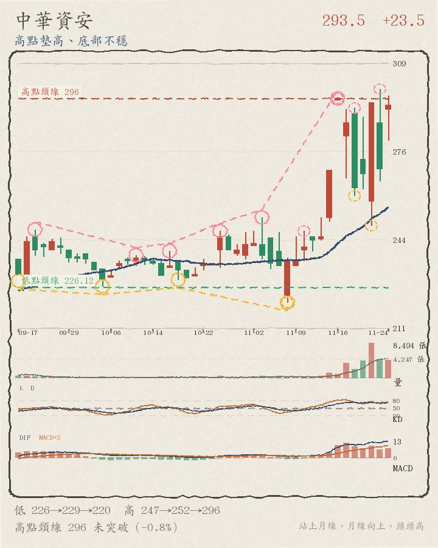
12:31 盤中 293.5（+8.70%），比加權指數弱 0.36 個百分點、站上月線 253.3，離高點頸線 296 還差 0.8%，高點還在墊高（但底部沒同步墊高）。
- 月線位置：現價 293.5 在月線 253.3 之上（+15.9%）；5 日線 276.5 也在月線之上（短均在上）；月線向上
- 量能：以已過交易時間推估，今天成交量約是 20 日均量的 4.46 倍（爆量），比 20 日均量大不少；上漲又量增，量價配合
- 關鍵價位：高點頸線 296 還沒突破，差 0.8%；前一交易日高點 299.5（低於 2.0%）；今天盤中高點 297（低於 1.2%）；今天盤中低點 280.5（高於 4.6%）
- 轉折結構：高點 247、252、296 墊高（頭頭高），但低點 226.5、229、220.5 沒有同步墊高；還沒確認的轉折低點 11-18 260、11-20 249；還沒確認的轉折高點 11-18 292.5、11-23 299.5（圖上虛線小圈）
智原 3035 上市
180.5 +14.0（+8.41%）
區間或轉弱 盤中成交值 12.45 億・全榜第 45 名（上市第 41 名）・相對大盤 -0.65
好條件 0/7：無
不好條件 3/7：相對大盤弱、在月線之下、月線下彎

12:31 盤中 180.5（+8.41%），比加權指數弱 0.65 個百分點、跌破月線 186.225，離高點頸線 211.25 還差 14.6%，轉折還沒走出明顯方向。
- 月線位置：現價 180.5 在月線 186.225 之下（-3.1%）；5 日線 172.6 也在月線之下（短均在下）；月線向下
- 量能：以已過交易時間推估，今天成交量約是 20 日均量的 0.75 倍（量平），比 20 日均量少很多；上漲但量縮，量價背離
- 關鍵價位：高點頸線 211.25 還沒突破，差 14.6%；前一交易日高點 169（高於 6.8%）；今天盤中高點 183（低於 1.4%）；今天盤中低點 177（高於 2.0%）
- 轉折結構：低點 188、186.5、154.5 與高點 211、231.5、211.5 都沒有明顯遞增，屬於區間震盪或轉弱；還沒確認的轉折低點 11-06 154.5、11-23 147.5；還沒確認的轉折高點 11-18 192.5、11-23 169（圖上虛線小圈）
量平
↑ 回上方清單
大聯大 3702 上市
77.6 +2.3（+3.05%）
區間或轉弱 盤中成交值 12.29 億・全榜第 46 名（上市第 42 名）・相對大盤 -6.01
好條件 1/7：攻擊量（量增＋上漲）
不好條件 4/7：跌破前低、相對大盤弱、在月線之下、月線下彎

12:31 盤中 77.6（+3.05%），比加權指數弱 6.01 個百分點、跌破月線 93.27，離高點頸線 120.25 還差 35.5%，轉折還沒走出明顯方向。
- 月線位置：現價 77.6 在月線 93.27 之下（-16.8%）；5 日線 79.14 也在月線之下（短均在下）；月線向下
- 量能：以已過交易時間推估，今天成交量約是 20 日均量的 1.43 倍（量增），比 20 日均量大不少；上漲又量增，量價配合
- 關鍵價位：已跌破前一個轉折低點；高點頸線 120.25 還在現價上方 35.5%；前一交易日高點 77.3（高於 0.4%）；今天盤中高點 81.7（低於 5.0%）；今天盤中低點 76.7（高於 1.2%）
- 轉折結構：低點 114、111.5、82.9 與高點 121、122、118 都沒有明顯遞增，屬於區間震盪或轉弱；還沒確認的轉折低點 11-17 78.7、11-23 73.4；還沒確認的轉折高點 11-10 96、11-18 83.4（圖上虛線小圈）
聖暉* 5536 上櫃
653 +59.0（+9.93%）
區間或轉弱 盤中成交值 11.2 億・全榜第 47 名（上櫃第 5 名）・相對大盤 +0.87
好條件 1/7：攻擊量（量增＋上漲）
不好條件 2/7：在月線之下、月線下彎

12:31 盤中 653（+9.93%），比加權指數強 0.87 個百分點、跌破月線 707.25，離高點頸線 764 還差 14.5%，轉折還沒走出明顯方向。
- 月線位置：現價 653 在月線 707.25 之下（-7.7%）；5 日線 636.6 也在月線之下（短均在下）；月線向下
- 量能：以已過交易時間推估，今天成交量約是 20 日均量的 2.54 倍（爆量），比 20 日均量大不少；上漲又量增，量價配合
- 關鍵價位：高點頸線 764 還沒突破，差 14.5%；前一交易日高點 616（高於 6.0%）；今天盤中高點 653（高於 0.0%）；今天盤中低點 638（高於 2.4%）
- 轉折結構：低點 816、753、620 與高點 888、1085、773 都沒有明顯遞增，屬於區間震盪或轉弱；還沒確認的轉折低點 11-17 648、11-23 564；還沒確認的轉折高點 11-18 700、11-23 616（圖上虛線小圈）
信邦 3023 上市
289 +11.5（+4.14%）
高點墊高、底部不穩 盤中成交值 11.11 億・全榜第 48 名（上市第 43 名）・相對大盤 -4.92
好條件 4/7：站上月線、頭頭高、突破頸線、攻擊量（量增＋上漲）
不好條件 2/7：相對大盤弱、月線下彎
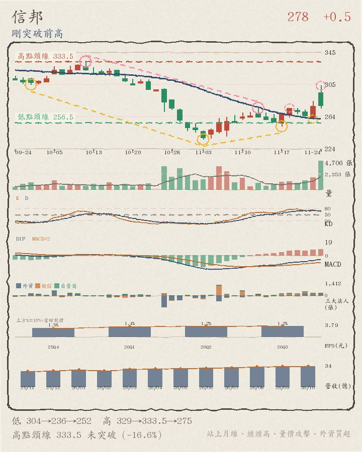
12:31 盤中 289（+4.14%），比加權指數弱 4.92 個百分點、站上月線 261.875，已突破高點頸線 277.83，高點還在墊高（但底部沒同步墊高）。
- 月線位置：現價 289 在月線 261.875 之上（+10.4%）；5 日線 271.1 也在月線之上（短均在上）；月線向下
- 量能：以已過交易時間推估，今天成交量約是 20 日均量的 2.76 倍（爆量），比 20 日均量大不少；上漲又量增，量價配合
- 關鍵價位：高點頸線 277.83 已站上；前一交易日高點 283.5（高於 1.9%）；今天盤中高點 303（低於 4.6%）；今天盤中低點 283.5（高於 1.9%）
- 轉折結構：高點 329、333.5、275 墊高（頭頭高），但低點 304.5、235.5、252 沒有同步墊高；還沒確認的轉折低點 11-17 252、11-23 261；還沒確認的轉折高點 11-18 275、11-23 283.5（圖上虛線小圈）
天品 6199 上櫃
173.5 +1.0（+0.58%）
高點墊高、底部不穩 盤中成交值 11.07 億・全榜第 49 名（上櫃第 6 名）・相對大盤 -8.48
好條件 5/7：站上月線、月線向上、頭頭高、突破頸線、守住今日高檔（距今日高點 1% 內）
不好條件 2/7：相對大盤弱、貼近今日低點（1% 內）

12:31 盤中 173.5（+0.58%），比加權指數弱 8.48 個百分點、站上月線 165.7，已突破高點頸線 171.5，高點還在墊高（但底部沒同步墊高）。
- 月線位置：現價 173.5 在月線 165.7 之上（+4.7%）；5 日線 171.2 也在月線之上（短均在上）；月線向上
- 量能：以已過交易時間推估，今天成交量約是 20 日均量的 0.86 倍（量平），比 20 日均量少一些
- 關鍵價位：高點頸線 171.5 已站上；前一交易日高點 173（高於 0.3%）；今天盤中高點 174（低於 0.3%）；今天盤中低點 173（高於 0.3%）
- 轉折結構：高點 153.5、150、171 墊高（頭頭高），但低點 134.5、134.5、156 沒有同步墊高；還沒確認的轉折低點 11-17 168.5、11-20 168；還沒確認的轉折高點 11-19 172.5、11-23 173（圖上虛線小圈）
台灣大 3045 上市
127 +4.0（+3.25%）
區間或轉弱 盤中成交值 10.93 億・全榜第 50 名（上市第 44 名）・相對大盤 -5.81
好條件 0/7：無
不好條件 3/7：相對大盤弱、在月線之下、月線下彎

12:31 盤中 127（+3.25%），比加權指數弱 5.81 個百分點、跌破月線 130.4，離高點頸線 133.6 還差 4.9%，轉折還沒走出明顯方向。
- 月線位置：現價 127 在月線 130.4 之下（-2.6%）；5 日線 125.7 也在月線之下（短均在下）；月線向下
- 量能：以已過交易時間推估，今天成交量約是 20 日均量的 1.01 倍（量平），跟 20 日均量差不多
- 關鍵價位：高點頸線 133.6 還沒突破，差 4.9%；前一交易日高點 125（高於 1.6%）；今天盤中高點 130（低於 2.3%）；今天盤中低點 124.5（高於 2.0%）
- 轉折結構：低點 121.5、131、125.5 與高點 135.5、136.5、132 都沒有明顯遞增，屬於區間震盪或轉弱；還沒確認的轉折低點 11-18 126、11-20 121.5；還沒確認的轉折高點 11-16 132、11-19 131（圖上虛線小圈）
量平
↑ 回上方清單
創見 2451 上市
254 +22.0（+9.48%）
區間或轉弱 盤中成交值 10.84 億・全榜第 51 名（上市第 45 名）・相對大盤 +0.42
好條件 4/7：站上月線、突破頸線、攻擊量（量增＋上漲）、守住今日高檔（距今日高點 1% 內）
不好條件 1/7：月線下彎
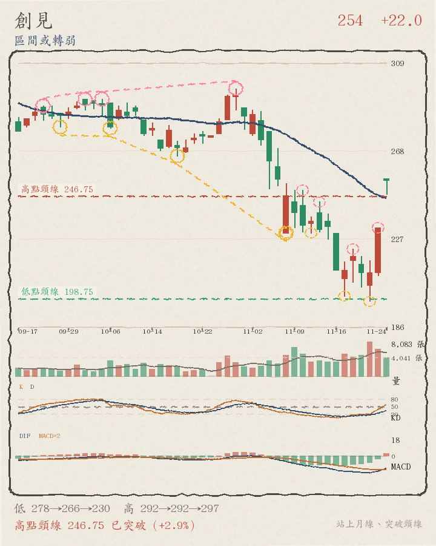
12:31 盤中 254（+9.48%），比加權指數強 0.42 個百分點、站上月線 247.125，已突破高點頸線 246.75，轉折還沒走出明顯方向。
- 月線位置：現價 254 在月線 247.125 之上（+2.8%）；5 日線 216.9 也在月線之下（短均在下）；月線向下
- 量能：以已過交易時間推估，今天成交量約是 20 日均量的 1.34 倍（量增），比 20 日均量大不少；上漲又量增，量價配合
- 關鍵價位：高點頸線 246.75 已站上；前一交易日高點 232（高於 9.5%）；今天盤中高點 255（低於 0.4%）；今天盤中低點 247.5（高於 2.6%）
- 轉折結構：低點 278.5、265.5、229.5 與高點 292、292、297 都沒有明顯遞增，屬於區間震盪或轉弱；還沒確認的轉折低點 11-17 200、11-20 197.5；還沒確認的轉折高點 11-18 222、11-23 232（圖上虛線小圈）
統一 1216 上市
78 +2.5（+3.31%）
區間或轉弱 盤中成交值 10.36 億・全榜第 52 名（上市第 46 名）・相對大盤 -5.75
好條件 1/7：攻擊量（量增＋上漲）
不好條件 3/7：相對大盤弱、在月線之下、月線下彎

12:31 盤中 78（+3.31%），比加權指數弱 5.75 個百分點、跌破月線 78.465，離高點頸線 80.98 還差 3.7%，轉折還沒走出明顯方向。
- 月線位置：現價 78 在月線 78.465 之下（-0.6%）；5 日線 77.44 也在月線之下（短均在下）；月線向下
- 量能：以已過交易時間推估，今天成交量約是 20 日均量的 1.20 倍（量增），比 20 日均量大不少；上漲又量增，量價配合
- 關鍵價位：高點頸線 80.98 還沒突破，差 3.7%；前一交易日高點 78.7（低於 0.9%）；今天盤中高點 79.5（低於 1.9%）；今天盤中低點 76.2（高於 2.4%）
- 轉折結構：低點 77.6、77.8、74.5 與高點 80.4、83、82.7 都沒有明顯遞增，屬於區間震盪或轉弱；還沒確認的轉折低點 11-18 77.9、11-20 74.2；還沒確認的轉折高點 11-17 79.8、11-19 81.1（圖上虛線小圈）
量增
↑ 回上方清單
事欣科 4916 上市
90.6 +7.8（+9.42%）
高點墊高、底部不穩 盤中成交值 10.25 億・全榜第 53 名（上市第 47 名）・相對大盤 +0.36
好條件 3/7：頭頭高、攻擊量（量增＋上漲）、守住今日高檔（距今日高點 1% 內）
不好條件 2/7：在月線之下、月線下彎

12:31 盤中 90.6（+9.42%），比加權指數強 0.36 個百分點、跌破月線 98.675，離高點頸線 108.25 還差 16.3%，高點還在墊高（但底部沒同步墊高）。
- 月線位置：現價 90.6 在月線 98.675 之下（-8.2%）；5 日線 96.94 也在月線之下（短均在下）；月線向下
- 量能：以已過交易時間推估，今天成交量約是 20 日均量的 1.57 倍（爆量），比 20 日均量大不少；上漲又量增，量價配合
- 關鍵價位：高點頸線 108.25 還沒突破，差 16.3%；前一交易日高點 88.9（高於 1.9%）；今天盤中高點 91（低於 0.4%）；今天盤中低點 89.5（高於 1.2%）
- 轉折結構：高點 105、109.5、121 墊高（頭頭高），但低點 100.5、97、80.3 沒有同步墊高；還沒確認的轉折低點 11-17 96.7、11-23 81；還沒確認的轉折高點 11-16 121、11-18 111（圖上虛線小圈）
緯穎 6669 上市
1510 +135.0（+9.82%）
區間或轉弱 盤中成交值 10.19 億・全榜第 54 名（上市第 48 名）・相對大盤 +0.76
好條件 0/7：無
不好條件 2/7：在月線之下、月線下彎

12:31 盤中 1510（+9.82%），比加權指數強 0.76 個百分點、跌破月線 1646.75，離高點頸線 1722.5 還差 12.3%，轉折還沒走出明顯方向。
- 月線位置：現價 1510 在月線 1646.75 之下（-8.3%）；5 日線 1407 也在月線之下（短均在下）；月線向下
- 量能：以已過交易時間推估，今天成交量約是 20 日均量的 0.21 倍（量縮），比 20 日均量少很多；上漲但量縮，量價背離
- 關鍵價位：高點頸線 1722.5 還沒突破，差 12.3%；前一交易日高點 1410（高於 7.1%）；今天盤中高點 1510（高於 0.0%）；今天盤中低點 1510（高於 0.0%）
- 轉折結構：低點 2080、1795、1485 與高點 2335、2020、1990 都沒有明顯遞增，屬於區間震盪或轉弱；還沒確認的轉折低點 11-17 1425、11-23 1275；還沒確認的轉折高點 11-18 1505、11-23 1410（圖上虛線小圈）
量縮
↑ 回上方清單
英業達 2356 上市
42.2 +3.5（+8.90%）
區間或轉弱 盤中成交值 10.08 億・全榜第 55 名（上市第 49 名）・相對大盤 -0.16
好條件 2/7：攻擊量（量增＋上漲）、守住今日高檔（距今日高點 1% 內）
不好條件 5/7：跌破前低、相對大盤弱、在月線之下、貼近今日低點（1% 內）、月線下彎
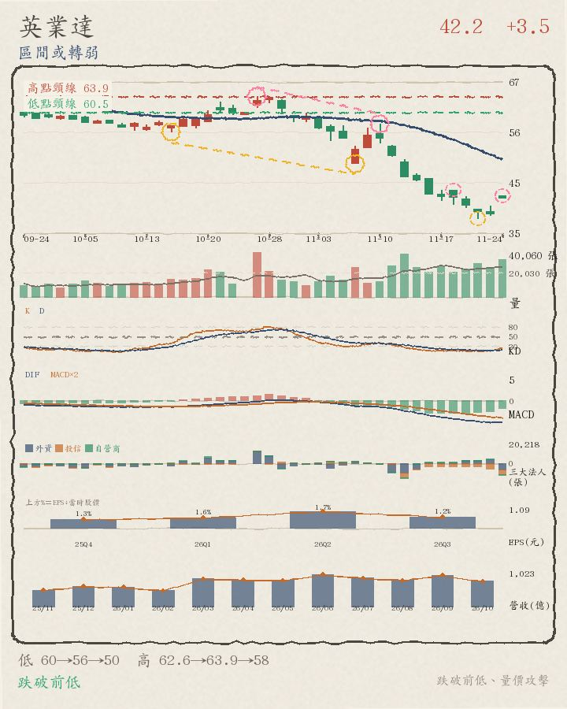
12:31 盤中 42.2（+8.90%），比加權指數弱 0.16 個百分點、跌破月線 51.472，離高點頸線 63.03 還差 33.0%，轉折還沒走出明顯方向。
- 月線位置：現價 42.2 在月線 51.472 之下（-18.0%）；5 日線 40.72 也在月線之下（短均在下）；月線向下
- 量能：以已過交易時間推估，今天成交量約是 20 日均量的 1.38 倍（量增），比 20 日均量大不少；上漲又量增，量價配合
- 關鍵價位：已跌破前一個轉折低點；高點頸線 63.03 還在現價上方 33.0%；前一交易日高點 40.45（高於 4.3%）；今天盤中高點 42.6（低於 0.9%）；今天盤中低點 42.05（高於 0.4%）
- 轉折結構：低點 60.5、56.3、49.5 與高點 62.6、63.9、58 都沒有明顯遞增，屬於區間震盪或轉弱；還沒確認的轉折低點 11-06 49.5、11-20 37.7；還沒確認的轉折高點 11-18 43.85、11-23 40.45（圖上虛線小圈）
台達電 2308 上市
1085 +95.0（+9.60%）
區間或轉弱 盤中成交值 9.78 億・全榜第 56 名（上市第 50 名）・相對大盤 +0.54
好條件 0/7：無
不好條件 2/7：在月線之下、月線下彎

12:31 盤中 1085（+9.60%），比加權指數強 0.54 個百分點、跌破月線 1212，轉折還沒走出明顯方向。
- 月線位置：現價 1085 在月線 1212 之下（-10.5%）；5 日線 1001 也在月線之下（短均在下）；月線向下
- 量能：以已過交易時間推估，今天成交量約是 20 日均量的 0.06 倍（量縮），比 20 日均量少很多；上漲但量縮，量價背離
- 關鍵價位：前一交易日高點 990（高於 9.6%）；今天盤中高點 1085（高於 0.0%）；今天盤中低點 1085（高於 0.0%）
- 轉折結構：低點 1560、1810、1020 與高點 1965、2115、1335 都沒有明顯遞增，屬於區間震盪或轉弱；還沒確認的轉折低點 11-11 1230、11-23 864；還沒確認的轉折高點 11-19 1115、11-23 990（圖上虛線小圈）
量縮
↑ 回上方清單
驊宏資 6148 上櫃
51.7 +2.7（+5.51%）
高點墊高、底部不穩 盤中成交值 8.54 億・全榜第 57 名（上櫃第 7 名）・相對大盤 -3.55
好條件 3/7：站上月線、月線向上、頭頭高
不好條件 1/7：相對大盤弱
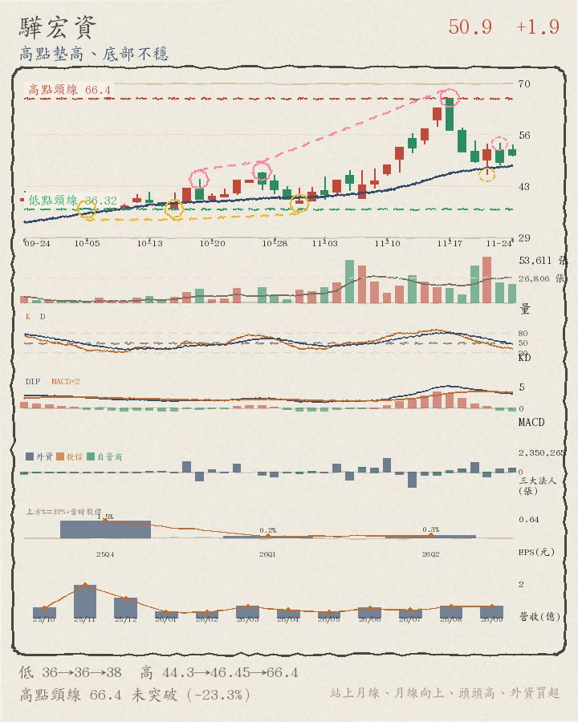
12:31 盤中 51.7（+5.51%），比加權指數弱 3.55 個百分點、站上月線 47.713，高點還在墊高（但底部沒同步墊高）。
- 月線位置：現價 51.7 在月線 47.713 之上（+8.4%）；5 日線 52.05 也在月線之上（短均在上）；月線向上
- 量能：以已過交易時間推估，今天成交量約是 20 日均量的 0.92 倍（量平），比 20 日均量少一些
- 關鍵價位：前一交易日高點 54.1（低於 4.4%）；今天盤中高點 53.8（低於 3.9%）；今天盤中低點 50.7（高於 2.0%）
- 轉折結構：高點 44.3、46.45、66.4 墊高（頭頭高），但低點 36.3、36.35、37.85 沒有同步墊高；還沒確認的轉折低點 11-06 39.1、11-20 45.6；還沒確認的轉折高點 11-17 66.4、11-23 54.1（圖上虛線小圈）
世紀* 5314 上櫃
22.5 +1.4（+6.64%）
區間或轉弱 盤中成交值 5.61 億・全榜第 58 名（上櫃第 8 名）・相對大盤 -2.42
好條件 2/7：站上月線、突破頸線
不好條件 3/7：相對大盤弱、貼近今日低點（1% 內）、月線下彎

12:31 盤中 22.5（+6.64%），比加權指數弱 2.42 個百分點、站上月線 22.303，已突破高點頸線 22，轉折還沒走出明顯方向。
- 月線位置：現價 22.5 在月線 22.303 之上（+0.9%）；5 日線 20.8 也在月線之下（短均在下）；月線向下
- 量能：以已過交易時間推估，今天成交量約是 20 日均量的 1.08 倍（量平），比 20 日均量大一些
- 關鍵價位：高點頸線 22 已站上；前一交易日高點 21.7（高於 3.7%）；今天盤中高點 23.1（低於 2.6%）；今天盤中低點 22.35（高於 0.7%）
- 轉折結構：低點 25、24.65、19.3 與高點 31.65、28.55、26.4 都沒有明顯遞增，屬於區間震盪或轉弱；還沒確認的轉折低點 11-06 19.3、11-20 18.8；還沒確認的轉折高點 11-16 26.4、11-23 21.7（圖上虛線小圈）
穩懋 3105 上櫃
449 +40.5（+9.91%）
區間或轉弱 盤中成交值 4.99 億・全榜第 59 名（上櫃第 9 名）・相對大盤 +0.85
好條件 0/7：無
不好條件 2/7：在月線之下、月線下彎

12:31 盤中 449（+9.91%），比加權指數強 0.85 個百分點、跌破月線 494.575，離高點頸線 580.33 還差 22.6%，轉折還沒走出明顯方向。
- 月線位置：現價 449 在月線 494.575 之下（-9.2%）；5 日線 432.7 也在月線之下（短均在下）；月線向下
- 量能：以已過交易時間推估，今天成交量約是 20 日均量的 0.05 倍（量縮），比 20 日均量少很多；上漲但量縮，量價背離
- 關鍵價位：高點頸線 580.33 還沒突破，差 22.6%；前一交易日高點 414（高於 8.5%）；今天盤中高點 449（高於 0.0%）；今天盤中低點 449（高於 0.0%）
- 轉折結構：低點 454、479、403.5 與高點 630、596、573 都沒有明顯遞增，屬於區間震盪或轉弱；還沒確認的轉折低點 11-09 403.5、11-23 351；還沒確認的轉折高點 11-18 510、11-23 414（圖上虛線小圈）
量縮
↑ 回上方清單
昇達科 3491 上櫃
1385 +125.0（+9.92%）
高點墊高、底部不穩 盤中成交值 4.71 億・全榜第 60 名（上櫃第 10 名）・相對大盤 +0.86
好條件 3/7：站上月線、月線向上、頭頭高
不好條件 0/7：無

12:31 盤中 1385（+9.92%），比加權指數強 0.86 個百分點、站上月線 1311.5，離高點頸線 1596.67 還差 13.3%，高點還在墊高（但底部沒同步墊高）。
- 月線位置：現價 1385 在月線 1311.5 之上（+5.6%）；5 日線 1360 也在月線之上（短均在上）；月線向上
- 量能：以已過交易時間推估，今天成交量約是 20 日均量的 0.22 倍（量縮），比 20 日均量少很多；上漲但量縮，量價背離
- 關鍵價位：高點頸線 1596.67 還沒突破，差 13.3%；前一交易日高點 1320（高於 4.9%）；今天盤中高點 1385（高於 0.0%）；今天盤中低點 1365（高於 1.5%）
- 轉折結構：高點 1470、1575、1585 墊高（頭頭高），但低點 1450、1315、1065 沒有同步墊高；還沒確認的轉折低點 11-17 1315、11-23 1105；還沒確認的轉折高點 11-18 1585、11-23 1320（圖上虛線小圈）
信驊 5274 上櫃
9140 +830.0（+9.99%）
區間或轉弱 盤中成交值 4.57 億・全榜第 61 名（上櫃第 11 名）・相對大盤 +0.93
好條件 0/7：無
不好條件 3/7：跌破前低、在月線之下、月線下彎

12:31 盤中 9140（+9.99%），比加權指數強 0.93 個百分點、跌破月線 12504，轉折還沒走出明顯方向。
- 月線位置：現價 9140 在月線 12504 之下（-26.9%）；5 日線 8895 也在月線之下（短均在下）；月線向下
- 量能：以已過交易時間推估，今天成交量約是 20 日均量的 0.14 倍（量縮），比 20 日均量少很多；上漲但量縮，量價背離
- 關鍵價位：前一交易日高點 8500（高於 7.5%）；今天盤中高點 9140（高於 0.0%）；今天盤中低點 9140（高於 0.0%）
- 轉折結構：低點 15975、15500、10710 與高點 18465、17490、13375 都沒有明顯遞增，屬於區間震盪或轉弱；還沒確認的轉折低點 11-10 10710、11-23 7295；還沒確認的轉折高點 11-12 13375、11-23 8500（圖上虛線小圈）
世界 5347 上櫃
121 +11.0（+10.00%）
區間或轉弱 盤中成交值 4.01 億・全榜第 62 名（上櫃第 12 名）・相對大盤 +0.94
好條件 0/7：無
不好條件 2/7：在月線之下、月線下彎

12:31 盤中 121（+10.00%），比加權指數強 0.94 個百分點、跌破月線 133.45，離高點頸線 141.5 還差 14.5%，轉折還沒走出明顯方向。
- 月線位置：現價 121 在月線 133.45 之下（-9.3%）；5 日線 116.5 也在月線之下（短均在下）；月線向下
- 量能：以已過交易時間推估，今天成交量約是 20 日均量的 0.28 倍（量縮），比 20 日均量少很多；上漲但量縮，量價背離
- 關鍵價位：高點頸線 141.5 還沒突破，差 14.5%；前一交易日高點 111.5（高於 8.5%）；今天盤中高點 121（高於 0.0%）；今天盤中低點 121（高於 0.0%）
- 轉折結構：低點 152.5、159、113.5 與高點 170、170、142 都沒有明顯遞增，屬於區間震盪或轉弱；還沒確認的轉折低點 11-17 117、11-23 102.5；還沒確認的轉折高點 11-12 142、11-18 128（圖上虛線小圈）
量縮
↑ 回上方清單
新普 6121 上櫃
291.5 +20.5（+7.56%）
區間或轉弱 盤中成交值 3.64 億・全榜第 63 名（上櫃第 13 名）・相對大盤 -1.50
好條件 1/7：攻擊量（量增＋上漲）
不好條件 4/7：跌破前低、相對大盤弱、在月線之下、月線下彎

12:31 盤中 291.5（+7.56%），比加權指數弱 1.50 個百分點、跌破月線 329.575，離高點頸線 382.67 還差 23.8%，轉折還沒走出明顯方向。
- 月線位置：現價 291.5 在月線 329.575 之下（-11.6%）；5 日線 278.8 也在月線之下（短均在下）；月線向下
- 量能：以已過交易時間推估，今天成交量約是 20 日均量的 1.53 倍（爆量），比 20 日均量大不少；上漲又量增，量價配合
- 關鍵價位：已跌破前一個轉折低點；高點頸線 382.67 還在現價上方 23.8%；前一交易日高點 279（高於 4.5%）；今天盤中高點 298（低於 2.2%）；今天盤中低點 288（高於 1.2%）
- 轉折結構：低點 370、358、363 與高點 386.5、383.5、378 都沒有明顯遞增，屬於區間震盪或轉弱；還沒確認的轉折低點 11-20 269.5、11-23 269.5；還沒確認的轉折高點 11-09 355、11-12 319.5（圖上虛線小圈）
群聯 8299 上櫃
1595 +145.0（+10.00%）
區間或轉弱 盤中成交值 3.48 億・全榜第 64 名（上櫃第 14 名）・相對大盤 +0.94
好條件 0/7：無
不好條件 2/7：在月線之下、月線下彎

12:31 盤中 1595（+10.00%），比加權指數強 0.94 個百分點、跌破月線 1669.5，離高點頸線 1762.5 還差 9.5%，轉折還沒走出明顯方向。
- 月線位置：現價 1595 在月線 1669.5 之下（-4.5%）；5 日線 1456 也在月線之下（短均在下）；月線向下
- 量能：以已過交易時間推估，今天成交量約是 20 日均量的 0.07 倍（量縮），比 20 日均量少很多；上漲但量縮，量價背離
- 關鍵價位：高點頸線 1762.5 還沒突破，差 9.5%；前一交易日高點 1450（高於 10.0%）；今天盤中高點 1595（高於 0.0%）；今天盤中低點 1595（高於 0.0%）
- 轉折結構：低點 1785、1865、1405 與高點 2350、2090、1765 都沒有明顯遞增，屬於區間震盪或轉弱；還沒確認的轉折低點 11-17 1430、11-23 1260；還沒確認的轉折高點 11-18 1625、11-23 1450（圖上虛線小圈）
量縮
↑ 回上方清單
原相 3227 上櫃
188 +11.0（+6.21%）
區間或轉弱 盤中成交值 3.3 億・全榜第 65 名（上櫃第 15 名）・相對大盤 -2.85
好條件 3/7：站上月線、突破頸線、攻擊量（量增＋上漲）
不好條件 3/7：相對大盤弱、貼近今日低點（1% 內）、月線下彎
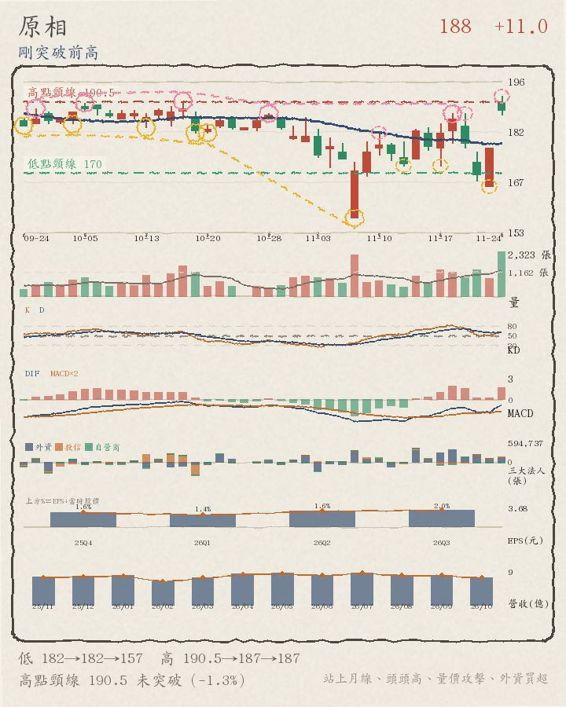
12:31 盤中 188（+6.21%），比加權指數弱 2.85 個百分點、站上月線 178.3，已突破高點頸線 186.6，轉折還沒走出明顯方向。
- 月線位置：現價 188 在月線 178.3 之上（+5.4%）；5 日線 178.4 也在月線之上（短均在上）；月線向下
- 量能：以已過交易時間推估，今天成交量約是 20 日均量的 2.45 倍（爆量），比 20 日均量大不少；上漲又量增，量價配合
- 關鍵價位：高點頸線 186.6 已站上；前一交易日高點 177（高於 6.2%）；今天盤中高點 192（低於 2.1%）；今天盤中低點 186.5（高於 0.8%）
- 轉折結構：低點 181.5、181.5、157 與高點 190.5、187、187 都沒有明顯遞增，屬於區間震盪或轉弱；還沒確認的轉折低點 11-17 172、11-23 166；還沒確認的轉折高點 11-19 187、11-23 177（圖上虛線小圈）
富喬 1815 上櫃
112.5 +10.0（+9.76%）
區間或轉弱 盤中成交值 3.04 億・全榜第 66 名（上櫃第 16 名）・相對大盤 +0.70
好條件 0/7：無
不好條件 2/7：在月線之下、月線下彎

12:31 盤中 112.5（+9.76%），比加權指數強 0.70 個百分點、跌破月線 127.075，離高點頸線 144.33 還差 22.1%，轉折還沒走出明顯方向。
- 月線位置：現價 112.5 在月線 127.075 之下（-11.5%）；5 日線 110.3 也在月線之下（短均在下）；月線向下
- 量能：以已過交易時間推估，今天成交量約是 20 日均量的 0.03 倍（量縮），比 20 日均量少很多；上漲但量縮，量價背離
- 關鍵價位：高點頸線 144.33 還沒突破，差 22.1%；前一交易日高點 104.5（高於 7.7%）；今天盤中高點 112.5（高於 0.0%）；今天盤中低點 112.5（高於 0.0%）
- 轉折結構：低點 113、124、109.5 與高點 149、143.5、150.5 都沒有明顯遞增，屬於區間震盪或轉弱；還沒確認的轉折低點 11-18 110、11-23 90.4；還沒確認的轉折高點 11-12 150.5、11-23 104.5（圖上虛線小圈）
量縮
↑ 回上方清單
旺矽 6223 上櫃
4185 +380.0（+9.99%）
區間或轉弱 盤中成交值 2.97 億・全榜第 67 名（上櫃第 17 名）・相對大盤 +0.93
好條件 0/7：無
不好條件 2/7：在月線之下、月線下彎

12:31 盤中 4185（+9.99%），比加權指數強 0.93 個百分點、跌破月線 4255，離高點頸線 5125 還差 18.3%，轉折還沒走出明顯方向。
- 月線位置：現價 4185 在月線 4255 之下（-1.6%）；5 日線 3941 也在月線之下（短均在下）；月線向下
- 量能：以已過交易時間推估，今天成交量約是 20 日均量的 0.08 倍（量縮），比 20 日均量少很多；上漲但量縮，量價背離
- 關鍵價位：高點頸線 5125 還沒突破，差 18.3%；前一交易日高點 3915（高於 6.9%）；今天盤中高點 4185（高於 0.0%）；今天盤中低點 4185（高於 0.0%）
- 轉折結構：低點 5090、4995、3355 與高點 6160、5150、5100 都沒有明顯遞增，屬於區間震盪或轉弱；還沒確認的轉折低點 11-18 3880、11-23 3250；還沒確認的轉折高點 11-18 4390、11-23 3915（圖上虛線小圈）
量縮
↑ 回上方清單
漢測 7856 上櫃
1735 +155.0（+9.81%）
區間或轉弱 盤中成交值 2.9 億・全榜第 68 名（上櫃第 18 名）・相對大盤 +0.75
好條件 0/7：無
不好條件 3/7：跌破前低、在月線之下、月線下彎

12:31 盤中 1735（+9.81%），比加權指數強 0.75 個百分點、跌破月線 2601.75，轉折還沒走出明顯方向。
- 月線位置：現價 1735 在月線 2601.75 之下（-33.3%）；5 日線 1862 也在月線之下（短均在下）；月線向下
- 量能：以已過交易時間推估，今天成交量約是 20 日均量的 0.40 倍（量縮），比 20 日均量少很多；上漲但量縮，量價背離
- 關鍵價位：前一交易日高點 1640（高於 5.8%）；今天盤中高點 1735（高於 0.0%）；今天盤中低點 1735（高於 0.0%）
- 轉折結構：低點 3155、2270、2270 與高點 4630、3750、3030 都沒有明顯遞增，屬於區間震盪或轉弱；還沒確認的轉折低點 11-09 2270、11-23 1525；還沒確認的轉折高點 11-12 3030（圖上虛線小圈）
聯亞 3081 上櫃
1525 +135.0（+9.71%）
區間或轉弱 盤中成交值 2.44 億・全榜第 69 名（上櫃第 19 名）・相對大盤 +0.65
好條件 0/7：無
不好條件 3/7：跌破前低、在月線之下、月線下彎
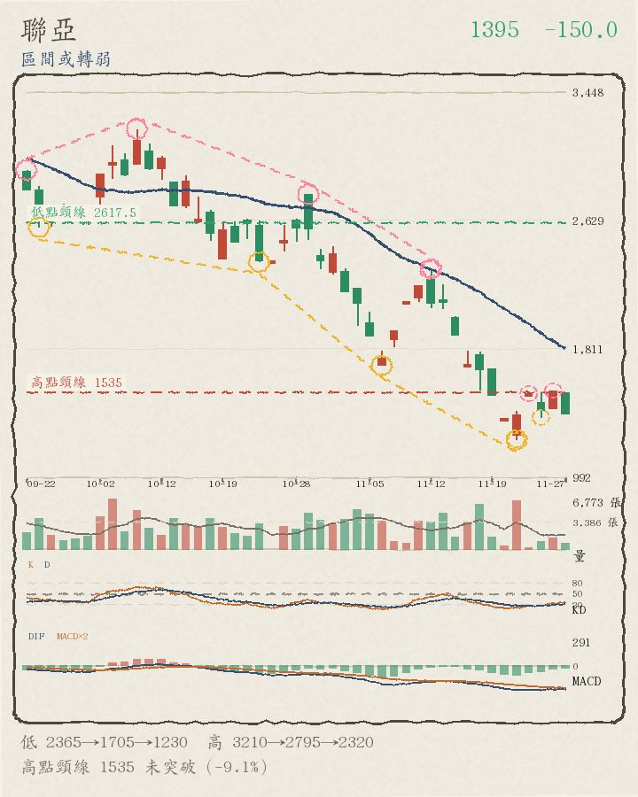
12:31 盤中 1525（+9.71%），比加權指數強 0.65 個百分點、跌破月線 2019，離高點頸線 2940 還差 48.1%，轉折還沒走出明顯方向。
- 月線位置：現價 1525 在月線 2019 之下（-24.5%）；5 日線 1532 也在月線之下（短均在下）；月線向下
- 量能：以已過交易時間推估，今天成交量約是 20 日均量的 0.06 倍（量縮），比 20 日均量少很多；上漲但量縮，量價背離
- 關鍵價位：已跌破前一個轉折低點；高點頸線 2940 還在現價上方 48.1%；前一交易日高點 1415（高於 7.8%）；今天盤中高點 1525（高於 0.0%）；今天盤中低點 1525（高於 0.0%）
- 轉折結構：低點 2585、2365、1705 與高點 3210、2795、2320 都沒有明顯遞增，屬於區間震盪或轉弱；還沒確認的轉折低點 11-06 1705、11-23 1230；還沒確認的轉折高點 11-12 2320、11-23 1415（圖上虛線小圈）
大國鋼 8415 上櫃
42.3 +1.2（+2.92%）
高點墊高、底部不穩 盤中成交值 2.37 億・全榜第 70 名（上櫃第 20 名）・相對大盤 -6.14
好條件 5/7：站上月線、月線向上、頭頭高、突破頸線、攻擊量（量增＋上漲）
不好條件 2/7：相對大盤弱、貼近今日低點（1% 內）
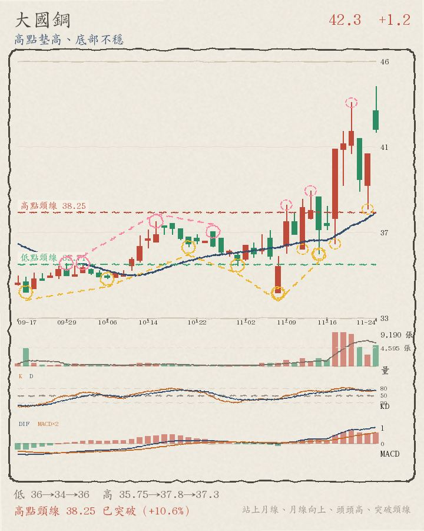
12:31 盤中 42.3（+2.92%），比加權指數弱 6.14 個百分點、站上月線 37.952，已突破高點頸線 38.25，高點還在墊高（但底部沒同步墊高）。
- 月線位置：現價 42.3 在月線 37.952 之上（+11.5%）；5 日線 41.22 也在月線之上（短均在上）；月線向上
- 量能：以已過交易時間推估，今天成交量約是 20 日均量的 3.07 倍（爆量），比 20 日均量大不少；上漲又量增，量價配合
- 關鍵價位：高點頸線 38.25 已站上；前一交易日高點 41.1（高於 2.9%）；今天盤中高點 44.4（低於 4.7%）；今天盤中低點 42.15（高於 0.4%）
- 轉折結構：高點 35.75、37.8、37.3 墊高（頭頭高），但低點 35.65、34.3、36.2 沒有同步墊高；還沒確認的轉折低點 11-17 36.7、11-23 38.4；還沒確認的轉折高點 11-12 39.3、11-19 43.6（圖上虛線小圈）